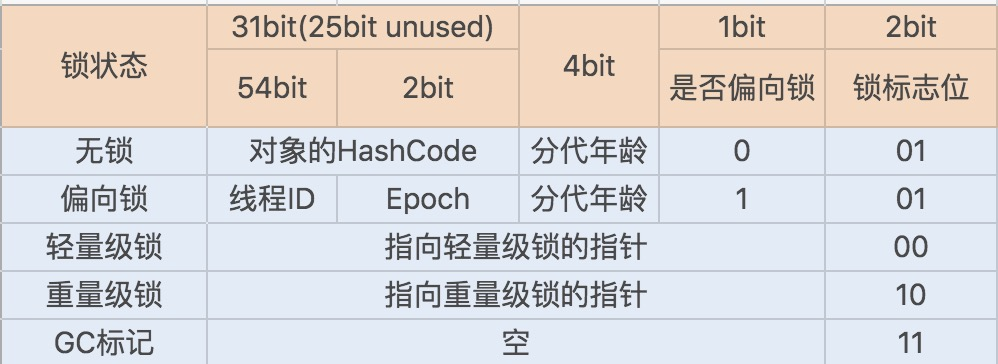

<!DOCTYPE html>
<html lang="en">
<head>
  <meta charset="utf-8">
  <meta http-equiv="X-UA-Compatible" content="IE=edge,chrome=1">
  <title>Java性能调优3 - 超级阵雨的乌托邦星球</title>
  <meta name="renderer" content="webkit" />
<meta name="viewport" content="width=device-width, initial-scale=1, maximum-scale=1"/>

<meta http-equiv="Cache-Control" content="no-transform" />
<meta http-equiv="Cache-Control" content="no-siteapp" />

<meta name="theme-color" content="#f8f5ec" />
<meta name="msapplication-navbutton-color" content="#f8f5ec">
<meta name="apple-mobile-web-app-capable" content="yes">
<meta name="apple-mobile-web-app-status-bar-style" content="#f8f5ec">


<meta name="author" content="超级阵雨" /><meta name="description" content="1.多线程之锁优化 1.1 深入了解Synchronized同步锁的优化方法 在并发编程中，多个线程访问同一个共享资源时，我们必须考虑如何维护数据的原" />


<meta name="generator" content="Hugo 0.91.2 with theme even" />


<link rel="canonical" href="https://zhenyu0324.github.io/post/javaoptimize3/" />
<link rel="apple-touch-icon" sizes="180x180" href="/apple-touch-icon.png">
<link rel="icon" type="image/png" sizes="32x32" href="/favicon-32x32.png">
<link rel="icon" type="image/png" sizes="16x16" href="/favicon-16x16.png">
<link rel="manifest" href="/manifest.json">
<link rel="mask-icon" href="/safari-pinned-tab.svg" color="#5bbad5">


<link href="/sass/main.min.154ed883776547b0e136be39b3037f61350da06f888d0868d1756a9463cd9520.css" rel="stylesheet">
<link rel="stylesheet" href="https://cdn.jsdelivr.net/npm/@fancyapps/fancybox@3.1.20/dist/jquery.fancybox.min.css" integrity="sha256-7TyXnr2YU040zfSP+rEcz29ggW4j56/ujTPwjMzyqFY=" crossorigin="anonymous">


<meta property="og:title" content="Java性能调优3" />
<meta property="og:description" content="1.多线程之锁优化 1.1 深入了解Synchronized同步锁的优化方法 在并发编程中，多个线程访问同一个共享资源时，我们必须考虑如何维护数据的原" />
<meta property="og:type" content="article" />
<meta property="og:url" content="https://zhenyu0324.github.io/post/javaoptimize3/" /><meta property="article:section" content="post" />
<meta property="article:published_time" content="2021-02-26T10:17:05+08:00" />
<meta property="article:modified_time" content="2021-02-26T10:17:05+08:00" />

<meta itemprop="name" content="Java性能调优3">
<meta itemprop="description" content="1.多线程之锁优化 1.1 深入了解Synchronized同步锁的优化方法 在并发编程中，多个线程访问同一个共享资源时，我们必须考虑如何维护数据的原"><meta itemprop="datePublished" content="2021-02-26T10:17:05+08:00" />
<meta itemprop="dateModified" content="2021-02-26T10:17:05+08:00" />
<meta itemprop="wordCount" content="23590">
<meta itemprop="keywords" content="java调优," /><meta name="twitter:card" content="summary"/>
<meta name="twitter:title" content="Java性能调优3"/>
<meta name="twitter:description" content="1.多线程之锁优化 1.1 深入了解Synchronized同步锁的优化方法 在并发编程中，多个线程访问同一个共享资源时，我们必须考虑如何维护数据的原"/>

<!--[if lte IE 9]>
  <script src="https://cdnjs.cloudflare.com/ajax/libs/classlist/1.1.20170427/classList.min.js"></script>
<![endif]-->

<!--[if lt IE 9]>
  <script src="https://cdn.jsdelivr.net/npm/html5shiv@3.7.3/dist/html5shiv.min.js"></script>
  <script src="https://cdn.jsdelivr.net/npm/respond.js@1.4.2/dest/respond.min.js"></script>
<![endif]-->

</head>
<body>
  <div id="mobile-navbar" class="mobile-navbar">
  <div class="mobile-header-logo">
    <a href="/" class="logo">超级阵雨的乌托邦星球</a>
  </div>
  <div class="mobile-navbar-icon">
    <span></span>
    <span></span>
    <span></span>
  </div>
</div>
<nav id="mobile-menu" class="mobile-menu slideout-menu">
  <ul class="mobile-menu-list">
    <a href="/">
        <li class="mobile-menu-item">Home</li>
      </a><a href="/post/">
        <li class="mobile-menu-item">Archives</li>
      </a><a href="/tags/">
        <li class="mobile-menu-item">Tags</li>
      </a><a href="/categories/">
        <li class="mobile-menu-item">Categories</li>
      </a><a href="/about/">
        <li class="mobile-menu-item">About</li>
      </a>
  </ul>
</nav>
  <div class="container" id="mobile-panel">
    <header id="header" class="header">
        <div class="logo-wrapper">
  <a href="/" class="logo">超级阵雨的乌托邦星球</a>
</div>

<nav class="site-navbar">
  <ul id="menu" class="menu">
    <li class="menu-item">
        <a class="menu-item-link" href="/">Home</a>
      </li><li class="menu-item">
        <a class="menu-item-link" href="/post/">Archives</a>
      </li><li class="menu-item">
        <a class="menu-item-link" href="/tags/">Tags</a>
      </li><li class="menu-item">
        <a class="menu-item-link" href="/categories/">Categories</a>
      </li><li class="menu-item">
        <a class="menu-item-link" href="/about/">About</a>
      </li>
  </ul>
</nav>
    </header>

    <main id="main" class="main">
      <div class="content-wrapper">
        <div id="content" class="content">
          <article class="post">
    
    <header class="post-header">
      <h1 class="post-title">Java性能调优3</h1>

      <div class="post-meta">
        <span class="post-time"> 2021-02-26 </span>
        <div class="post-category">
            <a href="/categories/%E5%AD%A6%E4%B9%A0%E7%AC%94%E8%AE%B0/"> 学习笔记 </a>
            </div>
          <span class="more-meta"> 23590 words </span>
          <span class="more-meta"> 48 mins read </span>
        
      </div>
    </header>

    <div class="post-toc" id="post-toc">
  <h2 class="post-toc-title">Contents</h2>
  <div class="post-toc-content always-active">
    <nav id="TableOfContents">
  <ul>
    <li><a href="#1多线程之锁优化">1.多线程之锁优化</a>
      <ul>
        <li><a href="#11-深入了解synchronized同步锁的优化方法">1.1 深入了解Synchronized同步锁的优化方法</a>
          <ul>
            <li><a href="#111-synchronized-同步锁实现原理">1.1.1 Synchronized 同步锁实现原理</a></li>
            <li><a href="#112-锁升级优化">1.1.2 锁升级优化</a></li>
            <li><a href="#113-动态编译实现锁消除--锁粗化">1.1.3 动态编译实现锁消除 / 锁粗化</a></li>
            <li><a href="#114-本节问题">1.1.4 本节问题</a></li>
          </ul>
        </li>
        <li><a href="#12-深入了解lock同步锁的优化方法">1.2 深入了解Lock同步锁的优化方法</a>
          <ul>
            <li><a href="#121-lock-锁的实现原理">1.2.1 Lock 锁的实现原理</a></li>
            <li><a href="#122-锁分离优化-lock-同步锁">1.2.2 锁分离优化 Lock 同步锁</a></li>
          </ul>
        </li>
        <li><a href="#13-使用乐观锁优化并行操作">1.3 使用乐观锁优化并行操作</a>
          <ul>
            <li><a href="#131-什么是乐观锁">1.3.1 什么是乐观锁</a></li>
            <li><a href="#132-乐观锁的实现原理">1.3.2 乐观锁的实现原理</a></li>
            <li><a href="#133-优化-cas-乐观锁">1.3.3 优化 CAS 乐观锁</a></li>
          </ul>
        </li>
      </ul>
    </li>
    <li><a href="#2-多线程调优">2. 多线程调优</a>
      <ul>
        <li><a href="#21-哪些操作导致了上下文切换">2.1 哪些操作导致了上下文切换？</a>
          <ul>
            <li><a href="#211-初识上下文切换">2.1.1 初识上下文切换</a></li>
            <li><a href="#212-多线程上下文切换诱因">2.1.2 多线程上下文切换诱因</a></li>
            <li><a href="#213-发现上下文切换">2.1.3 发现上下文切换</a></li>
          </ul>
        </li>
        <li><a href="#22-如何优化多线程上下文切换">2.2 如何优化多线程上下文切换？</a>
          <ul>
            <li><a href="#221-竞争锁优化">2.2.1 竞争锁优化</a></li>
            <li><a href="#222-waitnotify-优化">2.2.2 wait/notify 优化</a></li>
            <li><a href="#223-合理地设置线程池大小避免创建过多线程">2.2.3 合理地设置线程池大小，避免创建过多线程</a></li>
            <li><a href="#224-使用协程实现非阻塞等待">2.2.4 使用协程实现非阻塞等待</a></li>
            <li><a href="#225-减少-java-虚拟机的垃圾回收">2.2.5 减少 Java 虚拟机的垃圾回收</a></li>
          </ul>
        </li>
      </ul>
    </li>
    <li><a href="#3-并发容器的使用识别不同场景下最优容器">3. 并发容器的使用：识别不同场景下最优容器</a>
      <ul>
        <li><a href="#31-并发场景下的-map-容器">3.1 并发场景下的 Map 容器</a>
          <ul>
            <li><a href="#311-hashtable--concurrenthashmap">3.1.1 Hashtable 🆚 ConcurrentHashMap</a></li>
            <li><a href="#312-concurrenthashmap--concurrentskiplistmap">3.1.2 ConcurrentHashMap 🆚 ConcurrentSkipListMap</a></li>
          </ul>
        </li>
        <li><a href="#32-并发场景下的-list-容器">3.2 并发场景下的 List 容器</a></li>
      </ul>
    </li>
    <li><a href="#4-如何设置线程池大小">4. 如何设置线程池大小？</a>
      <ul>
        <li><a href="#41-线程池原理">4.1 线程池原理</a></li>
        <li><a href="#42-线程池框架-executor">4.2 线程池框架 Executor</a></li>
        <li><a href="#43-计算线程数量">4.3 计算线程数量</a></li>
      </ul>
    </li>
    <li><a href="#5-如何用协程来优化多线程业务">5. 如何用协程来优化多线程业务？</a>
      <ul>
        <li><a href="#51-线程实现模型">5.1 线程实现模型</a></li>
        <li><a href="#52-协程的实现原理">5.2 协程的实现原理</a></li>
        <li><a href="#53-kilim-协程框架">5.3 Kilim 协程框架</a></li>
      </ul>
    </li>
    <li><a href="#6-什么是数据的强弱一致性">6. 什么是数据的强、弱一致性？</a>
      <ul>
        <li><a href="#61-java-内存模型">6.1 Java 内存模型</a></li>
        <li><a href="#62-重排序">6.2 重排序</a></li>
        <li><a href="#63-happens-before-规则">6.3 Happens-before 规则</a></li>
      </ul>
    </li>
  </ul>
</nav>
  </div>
</div>
    <div class="post-content">
      <h1 id="1多线程之锁优化">1.多线程之锁优化</h1>
<h2 id="11-深入了解synchronized同步锁的优化方法">1.1 深入了解Synchronized同步锁的优化方法</h2>
<p>在并发编程中，多个线程访问同一个共享资源时，我们必须考虑如何维护数据的原子性。在 JDK1.5 之前，Java 是依靠 Synchronized 关键字实现锁功能来做到这点的。Synchronized 是 JVM 实现的一种内置锁，锁的获取和释放是由 JVM 隐式实现。</p>
<p>到了 JDK1.5 版本，并发包中新增了 Lock 接口来实现锁功能，它提供了与 Synchronized 关键字类似的同步功能，只是在使用时需要显示获取和释放锁。</p>
<p>Lock 同步锁是基于 Java 实现的，而 Synchronized 是基于底层操作系统的 Mutex Lock 实现的，每次获取和释放锁操作都会带来用户态和内核态的切换，从而增加系统性能开销。因此，在锁竞争激烈的情况下，Synchronized 同步锁在性能上就表现得非常糟糕，它也常被大家称为重量级锁。</p>
<p>特别是在单个线程重复申请锁的情况下，JDK1.5 版本的 Synchronized 锁性能要比 Lock 的性能差很多。例如，在 Dubbo 基于 Netty 实现的通信中，消费端向服务端通信之后，由于接收返回消息是异步，所以需要一个线程轮询监听返回信息。而在接收消息时，就需要用到锁来确保 request session 的原子性。如果我们这里使用 Synchronized 同步锁，那么每当同一个线程请求锁资源时，都会发生一次用户态和内核态的切换。</p>
<p>到了 JDK1.6 版本之后，Java 对 Synchronized 同步锁做了充分的优化，甚至在某些场景下，它的性能已经超越了 Lock 同步锁。这一讲我们就来看看 Synchronized 同步锁究竟是通过了哪些优化，实现了性能地提升。</p>
<h3 id="111-synchronized-同步锁实现原理">1.1.1 Synchronized 同步锁实现原理</h3>
<p>了解 Synchronized 同步锁优化之前，我们先来看看它的底层实现原理，这样可以帮助我们更好地理解后面的内容。</p>
<p>通常 Synchronized 实现同步锁的方式有两种，一种是修饰方法，一种是修饰方法块。以下就是通过 Synchronized 实现的两种同步方法加锁的方式：</p>
<div class="highlight"><div class="chroma">
<table class="lntable"><tr><td class="lntd">
<pre tabindex="0" class="chroma"><code><span class="lnt"> 1
</span><span class="lnt"> 2
</span><span class="lnt"> 3
</span><span class="lnt"> 4
</span><span class="lnt"> 5
</span><span class="lnt"> 6
</span><span class="lnt"> 7
</span><span class="lnt"> 8
</span><span class="lnt"> 9
</span><span class="lnt">10
</span><span class="lnt">11
</span><span class="lnt">12
</span></code></pre></td>
<td class="lntd">
<pre tabindex="0" class="chroma"><code class="language-fallback" data-lang="fallback">// 关键字在实例方法上，锁为当前实例
	public synchronized void method1() {
	    // code
	}
	
	// 关键字在代码块上，锁为括号里面的对象
	public void method2() {
	    Object o = new Object();
	    synchronized (o) {
	        // code
	    }
	}
</code></pre></td></tr></table>
</div>
</div><p>下面我们可以通过反编译看下具体字节码的实现，运行以下反编译命令，就可以输出我们想要的字节码：</p>
<div class="highlight"><div class="chroma">
<table class="lntable"><tr><td class="lntd">
<pre tabindex="0" class="chroma"><code><span class="lnt">1
</span><span class="lnt">2
</span><span class="lnt">3
</span></code></pre></td>
<td class="lntd">
<pre tabindex="0" class="chroma"><code class="language-fallback" data-lang="fallback">javac -encoding UTF-8 SyncTest.java  // 先运行编译 class 文件命令

javap -v SyncTest.class // 再通过 javap 打印出字节文件
</code></pre></td></tr></table>
</div>
</div><p>通过输出的字节码，你会发现：Synchronized 在修饰同步代码块时，是由 monitorenter 和 monitorexit 指令来实现同步的。进入 monitorenter 指令后，线程将持有 Monitor 对象，退出 monitorenter 指令后，线程将释放该 Monitor 对象。</p>
<div class="highlight"><div class="chroma">
<table class="lntable"><tr><td class="lntd">
<pre tabindex="0" class="chroma"><code><span class="lnt"> 1
</span><span class="lnt"> 2
</span><span class="lnt"> 3
</span><span class="lnt"> 4
</span><span class="lnt"> 5
</span><span class="lnt"> 6
</span><span class="lnt"> 7
</span><span class="lnt"> 8
</span><span class="lnt"> 9
</span><span class="lnt">10
</span><span class="lnt">11
</span><span class="lnt">12
</span><span class="lnt">13
</span><span class="lnt">14
</span><span class="lnt">15
</span><span class="lnt">16
</span><span class="lnt">17
</span><span class="lnt">18
</span><span class="lnt">19
</span><span class="lnt">20
</span><span class="lnt">21
</span><span class="lnt">22
</span><span class="lnt">23
</span><span class="lnt">24
</span><span class="lnt">25
</span><span class="lnt">26
</span><span class="lnt">27
</span><span class="lnt">28
</span><span class="lnt">29
</span><span class="lnt">30
</span><span class="lnt">31
</span><span class="lnt">32
</span><span class="lnt">33
</span><span class="lnt">34
</span><span class="lnt">35
</span><span class="lnt">36
</span><span class="lnt">37
</span><span class="lnt">38
</span><span class="lnt">39
</span><span class="lnt">40
</span><span class="lnt">41
</span><span class="lnt">42
</span><span class="lnt">43
</span><span class="lnt">44
</span><span class="lnt">45
</span><span class="lnt">46
</span><span class="lnt">47
</span><span class="lnt">48
</span><span class="lnt">49
</span><span class="lnt">50
</span><span class="lnt">51
</span><span class="lnt">52
</span><span class="lnt">53
</span><span class="lnt">54
</span><span class="lnt">55
</span><span class="lnt">56
</span><span class="lnt">57
</span><span class="lnt">58
</span><span class="lnt">59
</span><span class="lnt">60
</span><span class="lnt">61
</span><span class="lnt">62
</span><span class="lnt">63
</span><span class="lnt">64
</span><span class="lnt">65
</span><span class="lnt">66
</span><span class="lnt">67
</span><span class="lnt">68
</span><span class="lnt">69
</span><span class="lnt">70
</span><span class="lnt">71
</span><span class="lnt">72
</span><span class="lnt">73
</span><span class="lnt">74
</span><span class="lnt">75
</span><span class="lnt">76
</span><span class="lnt">77
</span><span class="lnt">78
</span><span class="lnt">79
</span><span class="lnt">80
</span><span class="lnt">81
</span><span class="lnt">82
</span><span class="lnt">83
</span><span class="lnt">84
</span><span class="lnt">85
</span></code></pre></td>
<td class="lntd">
<pre tabindex="0" class="chroma"><code class="language-fallback" data-lang="fallback">
12 | 多线程之锁优化（上）：深入了解Synchronized同步锁的优化方法
2019-06-15 刘超
Java性能调优实战
进入课程



讲述：李良
时长13:11大小12.07M


你好，我是刘超。从这讲开始，我们就正式进入到第三模块——多线程性能调优。

在并发编程中，多个线程访问同一个共享资源时，我们必须考虑如何维护数据的原子性。在 JDK1.5 之前，Java 是依靠 Synchronized 关键字实现锁功能来做到这点的。Synchronized 是 JVM 实现的一种内置锁，锁的获取和释放是由 JVM 隐式实现。

到了 JDK1.5 版本，并发包中新增了 Lock 接口来实现锁功能，它提供了与 Synchronized 关键字类似的同步功能，只是在使用时需要显示获取和释放锁。

Lock 同步锁是基于 Java 实现的，而 Synchronized 是基于底层操作系统的 Mutex Lock 实现的，每次获取和释放锁操作都会带来用户态和内核态的切换，从而增加系统性能开销。因此，在锁竞争激烈的情况下，Synchronized 同步锁在性能上就表现得非常糟糕，它也常被大家称为重量级锁。

特别是在单个线程重复申请锁的情况下，JDK1.5 版本的 Synchronized 锁性能要比 Lock 的性能差很多。例如，在 Dubbo 基于 Netty 实现的通信中，消费端向服务端通信之后，由于接收返回消息是异步，所以需要一个线程轮询监听返回信息。而在接收消息时，就需要用到锁来确保 request session 的原子性。如果我们这里使用 Synchronized 同步锁，那么每当同一个线程请求锁资源时，都会发生一次用户态和内核态的切换。

到了 JDK1.6 版本之后，Java 对 Synchronized 同步锁做了充分的优化，甚至在某些场景下，它的性能已经超越了 Lock 同步锁。这一讲我们就来看看 Synchronized 同步锁究竟是通过了哪些优化，实现了性能地提升。

Synchronized 同步锁实现原理
了解 Synchronized 同步锁优化之前，我们先来看看它的底层实现原理，这样可以帮助我们更好地理解后面的内容。

通常 Synchronized 实现同步锁的方式有两种，一种是修饰方法，一种是修饰方法块。以下就是通过 Synchronized 实现的两种同步方法加锁的方式：

// 关键字在实例方法上，锁为当前实例
	public synchronized void method1() {
	    // code
	}
	
	// 关键字在代码块上，锁为括号里面的对象
	public void method2() {
	    Object o = new Object();
	    synchronized (o) {
	        // code
	    }
	}
下面我们可以通过反编译看下具体字节码的实现，运行以下反编译命令，就可以输出我们想要的字节码：

javac -encoding UTF-8 SyncTest.java  // 先运行编译 class 文件命令
javap -v SyncTest.class // 再通过 javap 打印出字节文件
通过输出的字节码，你会发现：Synchronized 在修饰同步代码块时，是由 monitorenter 和 monitorexit 指令来实现同步的。进入 monitorenter 指令后，线程将持有 Monitor 对象，退出 monitorenter 指令后，线程将释放该 Monitor 对象。

  public void method2();
    descriptor: ()V
    flags: ACC_PUBLIC
    Code:
      stack=2, locals=4, args_size=1
         0: new           #2                  
         3: dup
         4: invokespecial #1                  
         7: astore_1
         8: aload_1
         9: dup
        10: astore_2
        11: monitorenter //monitorenter 指令
        12: aload_2
        13: monitorexit  //monitorexit  指令
        14: goto          22
        17: astore_3
        18: aload_2
        19: monitorexit
        20: aload_3
        21: athrow
        22: return
      Exception table:
         from    to  target type
            12    14    17   any
            17    20    17   any
      LineNumberTable:
        line 18: 0
        line 19: 8
        line 21: 12
        line 22: 22
      StackMapTable: number_of_entries = 2
        frame_type = 255 /* full_frame */
          offset_delta = 17
          locals = [ class com/demo/io/SyncTest, class java/lang/Object, class java/lang/Object ]
          stack = [ class java/lang/Throwable ]
        frame_type = 250 /* chop */
          offset_delta = 4
</code></pre></td></tr></table>
</div>
</div><p>再来看以下同步方法的字节码，你会发现：当 Synchronized 修饰同步方法时，并没有发现 monitorenter 和 monitorexit 指令，而是出现了一个 ACC_SYNCHRONIZED 标志。</p>
<p>这是因为 JVM 使用了 ACC_SYNCHRONIZED 访问标志来区分一个方法是否是同步方法。当方法调用时，调用指令将会检查该方法是否被设置 ACC_SYNCHRONIZED 访问标志。如果设置了该标志，执行线程将先持有 Monitor 对象，然后再执行方法。在该方法运行期间，其它线程将无法获取到该 Mointor 对象，当方法执行完成后，再释放该 Monitor 对象。</p>
<div class="highlight"><div class="chroma">
<table class="lntable"><tr><td class="lntd">
<pre tabindex="0" class="chroma"><code><span class="lnt">1
</span><span class="lnt">2
</span><span class="lnt">3
</span><span class="lnt">4
</span><span class="lnt">5
</span><span class="lnt">6
</span><span class="lnt">7
</span><span class="lnt">8
</span><span class="lnt">9
</span></code></pre></td>
<td class="lntd">
<pre tabindex="0" class="chroma"><code class="language-fallback" data-lang="fallback">public synchronized void method1();
    descriptor: ()V
    flags: ACC_PUBLIC, ACC_SYNCHRONIZED // ACC_SYNCHRONIZED 标志
    Code:
      stack=0, locals=1, args_size=1
         0: return
      LineNumberTable:
        line 8: 0
 
</code></pre></td></tr></table>
</div>
</div><p>通过以上的源码，我们再来看看 Synchronized 修饰方法是怎么实现锁原理的。</p>
<p>JVM 中的同步是基于进入和退出管程（Monitor）对象实现的。每个对象实例都会有一个 Monitor，Monitor 可以和对象一起创建、销毁。Monitor 是由 ObjectMonitor 实现，而 ObjectMonitor 是由 C++ 的 ObjectMonitor.hpp 文件实现，如下所示：</p>
<div class="highlight"><div class="chroma">
<table class="lntable"><tr><td class="lntd">
<pre tabindex="0" class="chroma"><code><span class="lnt"> 1
</span><span class="lnt"> 2
</span><span class="lnt"> 3
</span><span class="lnt"> 4
</span><span class="lnt"> 5
</span><span class="lnt"> 6
</span><span class="lnt"> 7
</span><span class="lnt"> 8
</span><span class="lnt"> 9
</span><span class="lnt">10
</span><span class="lnt">11
</span><span class="lnt">12
</span><span class="lnt">13
</span><span class="lnt">14
</span><span class="lnt">15
</span><span class="lnt">16
</span><span class="lnt">17
</span><span class="lnt">18
</span></code></pre></td>
<td class="lntd">
<pre tabindex="0" class="chroma"><code class="language-fallback" data-lang="fallback">ObjectMonitor() {
   _header = NULL;
   _count = 0; // 记录个数
   _waiters = 0,
   _recursions = 0;
   _object = NULL;
   _owner = NULL;
   _WaitSet = NULL; // 处于 wait 状态的线程，会被加入到 _WaitSet
   _WaitSetLock = 0 ;
   _Responsible = NULL ;
   _succ = NULL ;
   _cxq = NULL ;
   FreeNext = NULL ;
   _EntryList = NULL ; // 处于等待锁 block 状态的线程，会被加入到该列表
   _SpinFreq = 0 ;
   _SpinClock = 0 ;
   OwnerIsThread = 0 ;
}
</code></pre></td></tr></table>
</div>
</div><p>当多个线程同时访问一段同步代码时，多个线程会先被存放在 EntryList 集合中，处于 block 状态的线程，都会被加入到该列表。接下来当线程获取到对象的 Monitor 时，Monitor 是依靠底层操作系统的 Mutex Lock 来实现互斥的，线程申请 Mutex 成功，则持有该 Mutex，其它线程将无法获取到该 Mutex。</p>
<p>如果线程调用 wait() 方法，就会释放当前持有的 Mutex，并且该线程会进入 WaitSet 集合中，等待下一次被唤醒。如果当前线程顺利执行完方法，也将释放 Mutex。</p>
<p></p>
<p>看完上面的讲解，相信你对同步锁的实现原理已经有个深入的了解了。总结来说就是，同步锁在这种实现方式中，因 Monitor 是依赖于底层的操作系统实现，存在用户态与内核态之间的切换，所以增加了性能开销。</p>
<h3 id="112-锁升级优化">1.1.2 锁升级优化</h3>
<p>为了提升性能，JDK1.6 引入了<strong>偏向锁、轻量级锁、重量级</strong>锁概念，来减少锁竞争带来的上下文切换，而正是新增的 Java 对象头实现了锁升级功能。</p>
<p>当 Java 对象被 Synchronized 关键字修饰成为同步锁后，围绕这个锁的一系列升级操作都将和 Java 对象头有关。</p>
<h4 id="1121-java-对象头">1.1.2.1 Java 对象头</h4>
<p>在 JDK1.6 JVM 中，对象实例在堆内存中被分为了三个部分：对象头、实例数据和对齐填充。其中 Java 对象头由 Mark Word、指向类的指针以及数组长度三部分组成。</p>
<p>Mark Word 记录了对象和锁有关的信息。Mark Word 在 64 位 JVM 中的长度是 64bit，我们可以一起看下 64 位 JVM 的存储结构是怎么样的。如下图所示：</p>
<p></p>
<p>锁升级功能主要依赖于 Mark Word 中的锁标志位和释放偏向锁标志位，Synchronized 同步锁就是从偏向锁开始的，随着竞争越来越激烈，偏向锁升级到轻量级锁，最终升级到重量级锁。</p>
<ol>
<li>偏向锁
偏向锁主要用来优化同一线程多次申请同一个锁的竞争。</li>
</ol>
<p>在某些情况下，大部分时间是同一个线程竞争锁资源，例如，在创建一个线程并在线程中执行循环监听的场景下，或单线程操作一个线程安全集合时，同一线程每次都需要获取和释放锁，每次操作都会发生用户态与内核态的切换。</p>
<p>偏向锁的作用就是，当一个线程再次访问这个同步代码或方法时，该线程只需去对象头的 Mark Word 中去判断一下是否有偏向锁指向它的 ID，无需再进入 Monitor 去竞争对象了。当对象被当做同步锁并有一个线程抢到了锁时，锁标志位还是 01，“是否偏向锁”标志位设置为 1，并且记录抢到锁的线程 ID，表示进入偏向锁状态。</p>
<p>一旦出现其它线程竞争锁资源时，偏向锁就会被撤销。偏向锁的撤销需要等待全局安全点，暂停持有该锁的线程，同时检查该线程是否还在执行该方法，如果是，则升级锁，反之则被其它线程抢占。</p>
<p>下图中红线流程部分为偏向锁获取和撤销流程：</p>
<p></p>
<p>因此，在高并发场景下，当大量线程同时竞争同一个锁资源时，偏向锁就会被撤销，发生 stop the word 后， 开启偏向锁无疑会带来更大的性能开销，这时我们可以通过添加 JVM 参数关闭偏向锁来调优系统性能，示例代码如下：</p>
<div class="highlight"><div class="chroma">
<table class="lntable"><tr><td class="lntd">
<pre tabindex="0" class="chroma"><code><span class="lnt">1
</span></code></pre></td>
<td class="lntd">
<pre tabindex="0" class="chroma"><code class="language-fallback" data-lang="fallback">-XX:-UseBiasedLocking // 关闭偏向锁（默认打开）
</code></pre></td></tr></table>
</div>
</div><p>或</p>
<div class="highlight"><div class="chroma">
<table class="lntable"><tr><td class="lntd">
<pre tabindex="0" class="chroma"><code><span class="lnt">1
</span><span class="lnt">2
</span></code></pre></td>
<td class="lntd">
<pre tabindex="0" class="chroma"><code class="language-fallback" data-lang="fallback">-XX:+UseHeavyMonitors  // 设置重量级锁

</code></pre></td></tr></table>
</div>
</div><ol start="2">
<li>轻量级锁</li>
</ol>
<p>当有另外一个线程竞争获取这个锁时，由于该锁已经是偏向锁，当发现对象头 Mark Word 中的线程 ID 不是自己的线程 ID，就会进行 CAS 操作获取锁，如果获取成功，直接替换 Mark Word 中的线程 ID 为自己的 ID，该锁会保持偏向锁状态；如果获取锁失败，代表当前锁有一定的竞争，偏向锁将升级为轻量级锁。</p>
<p>轻量级锁适用于线程交替执行同步块的场景，绝大部分的锁在整个同步周期内都不存在长时间的竞争。</p>
<p>下图中红线流程部分为升级轻量级锁及操作流程：</p>
<p></p>
<ol start="3">
<li>自旋锁与重量级锁</li>
</ol>
<p>轻量级锁 CAS 抢锁失败，线程将会被挂起进入阻塞状态。如果正在持有锁的线程在很短的时间内释放资源，那么进入阻塞状态的线程无疑又要申请锁资源。</p>
<p>JVM 提供了一种自旋锁，可以通过自旋方式不断尝试获取锁，从而避免线程被挂起阻塞。这是基于大多数情况下，线程持有锁的时间都不会太长，毕竟线程被挂起阻塞可能会得不偿失。</p>
<p>从 JDK1.7 开始，自旋锁默认启用，自旋次数由 JVM 设置决定，这里我不建议设置的重试次数过多，因为 CAS 重试操作意味着长时间地占用 CPU。</p>
<p>自旋锁重试之后如果抢锁依然失败，同步锁就会升级至重量级锁，锁标志位改为 10。在这个状态下，未抢到锁的线程都会进入 Monitor，之后会被阻塞在 _WaitSet 队列中。</p>
<p>下图中红线流程部分为自旋后升级为重量级锁的流程：</p>
<p></p>
<p>在锁竞争不激烈且锁占用时间非常短的场景下，自旋锁可以提高系统性能。一旦锁竞争激烈或锁占用的时间过长，自旋锁将会导致大量的线程一直处于 CAS 重试状态，占用 CPU 资源，反而会增加系统性能开销。所以自旋锁和重量级锁的使用都要结合实际场景。</p>
<p>在高负载、高并发的场景下，我们可以通过设置 JVM 参数来关闭自旋锁，优化系统性能，示例代码如下：</p>
<div class="highlight"><div class="chroma">
<table class="lntable"><tr><td class="lntd">
<pre tabindex="0" class="chroma"><code><span class="lnt">1
</span><span class="lnt">2
</span><span class="lnt">3
</span></code></pre></td>
<td class="lntd">
<pre tabindex="0" class="chroma"><code class="language-fallback" data-lang="fallback">-XX:-UseSpinning // 参数关闭自旋锁优化 (默认打开) 
-XX:PreBlockSpin // 参数修改默认的自旋次数。JDK1.7 后，去掉此参数，由 jvm 控制

</code></pre></td></tr></table>
</div>
</div><h3 id="113-动态编译实现锁消除--锁粗化">1.1.3 动态编译实现锁消除 / 锁粗化</h3>
<p>除了锁升级优化，Java 还使用了编译器对锁进行优化。JIT 编译器在动态编译同步块的时候，借助了一种被称为逃逸分析的技术，来判断同步块使用的锁对象是否只能够被一个线程访问，而没有被发布到其它线程。</p>
<p>确认是的话，那么 JIT 编译器在编译这个同步块的时候不会生成 synchronized 所表示的锁的申请与释放的机器码，即消除了锁的使用。在 Java7 之后的版本就不需要手动配置了，该操作可以自动实现。</p>
<p>锁粗化同理，就是在 JIT 编译器动态编译时，如果发现几个相邻的同步块使用的是同一个锁实例，那么 JIT 编译器将会把这几个同步块合并为一个大的同步块，从而避免一个线程“反复申请、释放同一个锁“所带来的性能开销。</p>
<h4 id="1131-减小锁粒度">1.1.3.1 减小锁粒度</h4>
<p>除了锁内部优化和编译器优化之外，我们还可以通过代码层来实现锁优化，减小锁粒度就是一种惯用的方法。</p>
<p>当我们的锁对象是一个数组或队列时，集中竞争一个对象的话会非常激烈，锁也会升级为重量级锁。我们可以考虑将一个数组和队列对象拆成多个小对象，来降低锁竞争，提升并行度。</p>
<p>最经典的减小锁粒度的案例就是 JDK1.8 之前实现的 ConcurrentHashMap 版本。我们知道，HashTable 是基于一个数组 + 链表实现的，所以在并发读写操作集合时，存在激烈的锁资源竞争，也因此性能会存在瓶颈。而 ConcurrentHashMap 就很很巧妙地使用了分段锁 Segment 来降低锁资源竞争，如下图所示：</p>
<p></p>
<p><strong>减少锁竞争，是优化 Synchronized 同步锁的关键。</strong></p>
<h3 id="114-本节问题">1.1.4 本节问题</h3>
<p>请问以下 Synchronized 同步锁对普通方法和静态方法的修饰有什么区别？</p>
<div class="highlight"><div class="chroma">
<table class="lntable"><tr><td class="lntd">
<pre tabindex="0" class="chroma"><code><span class="lnt">1
</span><span class="lnt">2
</span><span class="lnt">3
</span><span class="lnt">4
</span><span class="lnt">5
</span><span class="lnt">6
</span><span class="lnt">7
</span><span class="lnt">8
</span><span class="lnt">9
</span></code></pre></td>
<td class="lntd">
<pre tabindex="0" class="chroma"><code class="language-fallback" data-lang="fallback">/ 修饰普通方法
	public synchronized void method1() {
	    // code
	}
	
	// 修饰静态方法
	public  synchronized static void method2() {
	    // code
	}
</code></pre></td></tr></table>
</div>
</div><h2 id="12-深入了解lock同步锁的优化方法">1.2 深入了解Lock同步锁的优化方法</h2>
<p>在 JDK1.5 之后，Java 还提供了 Lock 同步锁。那么它有什么优势呢？</p>
<p>相对于需要 JVM 隐式获取和释放锁的 Synchronized 同步锁，Lock 同步锁（以下简称 Lock 锁）需要的是显示获取和释放锁，这就为获取和释放锁提供了更多的灵活性。Lock 锁的基本操作是通过乐观锁来实现的，但由于 Lock 锁也会在阻塞时被挂起，因此它依然属于悲观锁。我们可以通过一张图来简单对比下两个同步锁，了解下各自的特点：</p>
<p></p>
<p>从性能方面上来说，在并发量不高、竞争不激烈的情况下，Synchronized 同步锁由于具有分级锁的优势，性能上与 Lock 锁差不多；但在高负载、高并发的情况下，Synchronized 同步锁由于竞争激烈会升级到重量级锁，性能则没有 Lock 锁稳定。</p>
<h3 id="121-lock-锁的实现原理">1.2.1 Lock 锁的实现原理</h3>
<p>Lock 锁是基于 Java 实现的锁，Lock 是一个接口类，常用的实现类有 ReentrantLock、ReentrantReadWriteLock（RRW），它们都是依赖 AbstractQueuedSynchronizer（AQS）类实现的。</p>
<p>AQS 类结构中包含一个基于链表实现的等待队列（CLH 队列），用于存储所有阻塞的线程，AQS 中还有一个 state 变量，该变量对 ReentrantLock 来说表示加锁状态。</p>
<p>该队列的操作均通过 CAS 操作实现，我们可以通过一张图来看下整个获取锁的流程。
</p>
<h3 id="122-锁分离优化-lock-同步锁">1.2.2 锁分离优化 Lock 同步锁</h3>
<p>虽然 Lock 锁的性能稳定，但也并不是所有的场景下都默认使用 ReentrantLock 独占锁来实现线程同步。</p>
<p>我们知道，对于同一份数据进行读写，如果一个线程在读数据，而另一个线程在写数据，那么读到的数据和最终的数据就会不一致；如果一个线程在写数据，而另一个线程也在写数据，那么线程前后看到的数据也会不一致。这个时候我们可以在读写方法中加入互斥锁，来保证任何时候只能有一个线程进行读或写操作。</p>
<p>在大部分业务场景中，读业务操作要远远大于写业务操作。而在多线程编程中，读操作并不会修改共享资源的数据，如果多个线程仅仅是读取共享资源，那么这种情况下其实没有必要对资源进行加锁。如果使用互斥锁，反倒会影响业务的并发性能，那么在这种场景下，有没有什么办法可以优化下锁的实现方式呢？</p>
<ol>
<li>读写锁 ReentrantReadWriteLock</li>
</ol>
<p>针对这种读多写少的场景，Java 提供了另外一个实现 Lock 接口的读写锁 RRW。我们已知 ReentrantLock 是一个独占锁，同一时间只允许一个线程访问，而 RRW 允许多个读线程同时访问，但不允许写线程和读线程、写线程和写线程同时访问。读写锁内部维护了两个锁，一个是用于读操作的 ReadLock，一个是用于写操作的 WriteLock。</p>
<p>那读写锁又是如何实现锁分离来保证共享资源的原子性呢？</p>
<p>RRW 也是基于 AQS 实现的，它的自定义同步器（继承 AQS）需要在同步状态 state 上维护多个读线程和一个写线程的状态，该状态的设计成为实现读写锁的关键。RRW 很好地使用了高低位，来实现一个整型控制两种状态的功能，读写锁将变量切分成了两个部分，高 16 位表示读，低 16 位表示写。</p>
<p>一个线程尝试获取写锁时，会先判断同步状态 state 是否为 0。如果 state 等于 0，说明暂时没有其它线程获取锁；如果 state 不等于 0，则说明有其它线程获取了锁。</p>
<p>此时再判断同步状态 state 的低 16 位（w）是否为 0，如果 w 为 0，则说明其它线程获取了读锁，此时进入 CLH 队列进行阻塞等待；如果 w 不为 0，则说明其它线程获取了写锁，此时要判断获取了写锁的是不是当前线程，若不是就进入 CLH 队列进行阻塞等待；若是，就应该判断当前线程获取写锁是否超过了最大次数，若超过，抛异常，反之更新同步状态。</p>
<p></p>
<p>一个线程尝试获取读锁时，同样会先判断同步状态 state 是否为 0。如果 state 等于 0，说明暂时没有其它线程获取锁，此时判断是否需要阻塞，如果需要阻塞，则进入 CLH 队列进行阻塞等待；如果不需要阻塞，则 CAS 更新同步状态为读状态。</p>
<p>如果 state 不等于 0，会判断同步状态低 16 位，如果存在写锁，则获取读锁失败，进入 CLH 阻塞队列；反之，判断当前线程是否应该被阻塞，如果不应该阻塞则尝试 CAS 同步状态，获取成功更新同步锁为读状态。</p>
<p></p>
<ol start="2">
<li>读写锁再优化之 StampedLock</li>
</ol>
<p>RRW 被很好地应用在了读大于写的并发场景中，然而 RRW 在性能上还有可提升的空间。在读取很多、写入很少的情况下，RRW 会使写入线程遭遇饥饿（Starvation）问题，也就是说写入线程会因迟迟无法竞争到锁而一直处于等待状态。</p>
<p>在 JDK1.8 中，Java 提供了 StampedLock 类解决了这个问题。StampedLock 不是基于 AQS 实现的，但实现的原理和 AQS 是一样的，都是基于队列和锁状态实现的。与 RRW 不一样的是，StampedLock 控制锁有三种模式: 写、悲观读以及乐观读，并且 StampedLock 在获取锁时会返回一个票据 stamp，获取的 stamp 除了在释放锁时需要校验，在乐观读模式下，stamp 还会作为读取共享资源后的二次校验，后面我会讲解 stamp 的工作原理。</p>
<p>我们先通过一个官方的例子来了解下 StampedLock 是如何使用的，代码如下：</p>
<div class="highlight"><div class="chroma">
<table class="lntable"><tr><td class="lntd">
<pre tabindex="0" class="chroma"><code><span class="lnt"> 1
</span><span class="lnt"> 2
</span><span class="lnt"> 3
</span><span class="lnt"> 4
</span><span class="lnt"> 5
</span><span class="lnt"> 6
</span><span class="lnt"> 7
</span><span class="lnt"> 8
</span><span class="lnt"> 9
</span><span class="lnt">10
</span><span class="lnt">11
</span><span class="lnt">12
</span><span class="lnt">13
</span><span class="lnt">14
</span><span class="lnt">15
</span><span class="lnt">16
</span><span class="lnt">17
</span><span class="lnt">18
</span><span class="lnt">19
</span><span class="lnt">20
</span><span class="lnt">21
</span><span class="lnt">22
</span><span class="lnt">23
</span><span class="lnt">24
</span><span class="lnt">25
</span><span class="lnt">26
</span><span class="lnt">27
</span><span class="lnt">28
</span><span class="lnt">29
</span><span class="lnt">30
</span><span class="lnt">31
</span><span class="lnt">32
</span><span class="lnt">33
</span><span class="lnt">34
</span><span class="lnt">35
</span></code></pre></td>
<td class="lntd">
<pre tabindex="0" class="chroma"><code class="language-fallback" data-lang="fallback">public class Point {
    private double x, y;
    private final StampedLock s1 = new StampedLock();
 
    void move(double deltaX, double deltaY) {
        // 获取写锁
        long stamp = s1.writeLock();
        try {
            x += deltaX;
            y += deltaY;
        } finally {
            // 释放写锁
            s1.unlockWrite(stamp);
        }
    }
 
    double distanceFormOrigin() {
        // 乐观读操作
        long stamp = s1.tryOptimisticRead();  
        // 拷贝变量
        double currentX = x, currentY = y;
        // 判断读期间是否有写操作
        if (!s1.validate(stamp)) {
            // 升级为悲观读
            stamp = s1.readLock();
            try {
                currentX = x;
                currentY = y;
            } finally {
                s1.unlockRead(stamp);
            }
        }
        return Math.sqrt(currentX * currentX + currentY * currentY);
    }
}
</code></pre></td></tr></table>
</div>
</div><p>我们可以发现：一个写线程获取写锁的过程中，首先是通过 WriteLock 获取一个票据 stamp，WriteLock 是一个独占锁，同时只有一个线程可以获取该锁，当一个线程获取该锁后，其它请求的线程必须等待，当没有线程持有读锁或者写锁的时候才可以获取到该锁。请求该锁成功后会返回一个 stamp 票据变量，用来表示该锁的版本，当释放该锁的时候，需要 unlockWrite 并传递参数 stamp。</p>
<p>接下来就是一个读线程获取锁的过程。首先线程会通过乐观锁 tryOptimisticRead 操作获取票据 stamp ，如果当前没有线程持有写锁，则返回一个非 0 的 stamp 版本信息。线程获取该 stamp 后，将会拷贝一份共享资源到方法栈，在这之前具体的操作都是基于方法栈的拷贝数据。</p>
<p>之后方法还需要调用 validate，验证之前调用 tryOptimisticRead 返回的 stamp 在当前是否有其它线程持有了写锁，如果是，那么 validate 会返回 0，升级为悲观锁；否则就可以使用该 stamp 版本的锁对数据进行操作。</p>
<p>相比于 RRW，StampedLock 获取读锁只是使用与或操作进行检验，不涉及 CAS 操作，即使第一次乐观锁获取失败，也会马上升级至悲观锁，这样就可以避免一直进行 CAS 操作带来的 CPU 占用性能的问题，因此 StampedLock 的效率更高。</p>
<h2 id="13-使用乐观锁优化并行操作">1.3 使用乐观锁优化并行操作</h2>
<h3 id="131-什么是乐观锁">1.3.1 什么是乐观锁</h3>
<p>开始优化前，我们先来简单回顾下乐观锁的定义。</p>
<p>乐观锁，顾名思义，就是说在操作共享资源时，它总是抱着乐观的态度进行，它认为自己可以成功地完成操作。但实际上，当多个线程同时操作一个共享资源时，只有一个线程会成功，那么失败的线程呢？它们不会像悲观锁一样在操作系统中挂起，而仅仅是返回，并且系统允许失败的线程重试，也允许自动放弃退出操作。</p>
<p>所以，乐观锁相比悲观锁来说，不会带来死锁、饥饿等活性故障问题，线程间的相互影响也远远比悲观锁要小。更为重要的是，乐观锁没有因竞争造成的系统开销，所以在性能上也是更胜一筹。</p>
<h3 id="132-乐观锁的实现原理">1.3.2 乐观锁的实现原理</h3>
<p>相信你对上面的内容是有一定的了解的，下面我们来看看乐观锁的实现原理，有助于我们从根本上总结优化方法。</p>
<p>CAS 是实现乐观锁的核心算法，它包含了 3 个参数：V（需要更新的变量）、E（预期值）和 N（最新值）。</p>
<p>只有当需要更新的变量等于预期值时，需要更新的变量才会被设置为最新值，如果更新值和预期值不同，则说明已经有其它线程更新了需要更新的变量，此时当前线程不做操作，返回 V 的真实值。</p>
<p>1.CAS 如何实现原子操作</p>
<p>在 JDK 中的 concurrent 包中，atomic 路径下的类都是基于 CAS 实现的。AtomicInteger 就是基于 CAS 实现的一个线程安全的整型类。下面我们通过源码来了解下如何使用 CAS 实现原子操作。</p>
<p>我们可以看到 AtomicInteger 的自增方法 getAndIncrement 是用了 Unsafe 的 getAndAddInt 方法，显然 AtomicInteger 依赖于本地方法 Unsafe 类，Unsafe 类中的操作方法会调用 CPU 底层指令实现原子操作。</p>
<div class="highlight"><div class="chroma">
<table class="lntable"><tr><td class="lntd">
<pre tabindex="0" class="chroma"><code><span class="lnt"> 1
</span><span class="lnt"> 2
</span><span class="lnt"> 3
</span><span class="lnt"> 4
</span><span class="lnt"> 5
</span><span class="lnt"> 6
</span><span class="lnt"> 7
</span><span class="lnt"> 8
</span><span class="lnt"> 9
</span><span class="lnt">10
</span><span class="lnt">11
</span><span class="lnt">12
</span><span class="lnt">13
</span></code></pre></td>
<td class="lntd">
<pre tabindex="0" class="chroma"><code class="language-fallback" data-lang="fallback">
// 基于 CAS 操作更新值
    public final boolean compareAndSet(int expect, int update) {
        return unsafe.compareAndSwapInt(this, valueOffset, expect, update);
    }
    // 基于 CAS 操作增 1
    public final int getAndIncrement() {
        return unsafe.getAndAddInt(this, valueOffset, 1);
    }
    
    // 基于 CAS 操作减 1
    public final int getAndDecrement() {
        return unsafe.getAndAddInt(this, valueOffset, -1);
</code></pre></td></tr></table>
</div>
</div><ol start="2">
<li>处理器如何实现原子操作</li>
</ol>
<p>CAS 是调用处理器底层指令来实现原子操作，那么处理器底层又是如何实现原子操作的呢？</p>
<p>处理器和物理内存之间的通信速度要远慢于处理器间的处理速度，所以处理器有自己的内部缓存。如下图所示，在执行操作时，频繁使用的内存数据会缓存在处理器的 L1、L2 和 L3 高速缓存中，以加快频繁读取的速度。</p>
<p></p>
<p>一般情况下，一个单核处理器能自我保证基本的内存操作是原子性的，当一个线程读取一个字节时，所有进程和线程看到的字节都是同一个缓存里的字节，其它线程不能访问这个字节的内存地址。</p>
<p>但现在的服务器通常是多处理器，并且每个处理器都是多核的。每个处理器维护了一块字节的内存，每个内核维护了一块字节的缓存，这时候多线程并发就会存在缓存不一致的问题，从而导致数据不一致。</p>
<p>这个时候，处理器提供了总线锁定和缓存锁定两个机制来保证复杂内存操作的原子性。</p>
<p>当处理器要操作一个共享变量的时候，其在总线上会发出一个 Lock 信号，这时其它处理器就不能操作共享变量了，该处理器会独享此共享内存中的变量。但总线锁定在阻塞其它处理器获取该共享变量的操作请求时，也可能会导致大量阻塞，从而增加系统的性能开销。</p>
<p>于是，后来的处理器都提供了缓存锁定机制，也就说当某个处理器对缓存中的共享变量进行了操作，就会通知其它处理器放弃存储该共享资源或者重新读取该共享资源。目前最新的处理器都支持缓存锁定机制。</p>
<h3 id="133-优化-cas-乐观锁">1.3.3 优化 CAS 乐观锁</h3>
<p>虽然乐观锁在并发性能上要比悲观锁优越，但是在写大于读的操作场景下，CAS 失败的可能性会增大，如果不放弃此次 CAS 操作，就需要循环做 CAS 重试，这无疑会长时间地占用 CPU。</p>
<p>在 Java7 中，通过以下代码我们可以看到：AtomicInteger 的 getAndSet 方法中使用了 for 循环不断重试 CAS 操作，如果长时间不成功，就会给 CPU 带来非常大的执行开销。到了 Java8，for 循环虽然被去掉了，但我们反编译 Unsafe 类时就可以发现该循环其实是被封装在了 Unsafe 类中，CPU 的执行开销依然存在。</p>
<div class="highlight"><div class="chroma">
<table class="lntable"><tr><td class="lntd">
<pre tabindex="0" class="chroma"><code><span class="lnt">1
</span><span class="lnt">2
</span><span class="lnt">3
</span><span class="lnt">4
</span><span class="lnt">5
</span><span class="lnt">6
</span><span class="lnt">7
</span><span class="lnt">8
</span></code></pre></td>
<td class="lntd">
<pre tabindex="0" class="chroma"><code class="language-fallback" data-lang="fallback">  public final int getAndSet(int newValue) {
        for (;;) {
            int current = get();
            if (compareAndSet(current, newValue))
                return current;
        }
    }

</code></pre></td></tr></table>
</div>
</div><p>在 JDK1.8 中，Java 提供了一个新的原子类 LongAdder。LongAdder 在高并发场景下会比 AtomicInteger 和 AtomicLong 的性能更好，代价就是会消耗更多的内存空间。</p>
<p>LongAdder 的原理就是降低操作共享变量的并发数，也就是将对单一共享变量的操作压力分散到多个变量值上，将竞争的每个写线程的 value 值分散到一个数组中，不同线程会命中到数组的不同槽中，各个线程只对自己槽中的 value 值进行 CAS 操作，最后在读取值的时候会将原子操作的共享变量与各个分散在数组的 value 值相加，返回一个近似准确的数值。</p>
<p>LongAdder 内部由一个 base 变量和一个 cell[] 数组组成。当只有一个写线程，没有竞争的情况下，LongAdder 会直接使用 base 变量作为原子操作变量，通过 CAS 操作修改变量；当有多个写线程竞争的情况下，除了占用 base 变量的一个写线程之外，其它各个线程会将修改的变量写入到自己的槽 cell[] 数组中，最终结果可通过以下公式计算得出：</p>
<p></p>
<p>我们可以发现，LongAdder 在操作后的返回值只是一个近似准确的数值，但是 LongAdder 最终返回的是一个准确的数值， 所以在一些对实时性要求比较高的场景下，LongAdder 并不能取代 AtomicInteger 或 AtomicLong。</p>
<blockquote>
<p>在日常开发中，使用乐观锁最常见的场景就是数据库的更新操作了。为了保证操作数据库的原子性，我们常常会为每一条数据定义一个版本号，并在更新前获取到它，到了更新数据库的时候，还要判断下已经获取的版本号是否被更新过，如果没有，则执行该操作。</p>
<p>CAS 乐观锁在平常使用时比较受限，它只能保证单个变量操作的原子性，当涉及到多个变量时，CAS 就无能为力了，但前两讲讲到的悲观锁可以通过对整个代码块加锁来做到这点。</p>
<p>CAS 乐观锁在高并发写大于读的场景下，大部分线程的原子操作会失败，失败后的线程将会不断重试 CAS 原子操作，这样就会导致大量线程长时间地占用 CPU 资源，给系统带来很大的性能开销。在 JDK1.8 中，Java 新增了一个原子类 LongAdder，它使用了空间换时间的方法，解决了上述问题。</p>
</blockquote>
<h1 id="2-多线程调优">2. 多线程调优</h1>
<h2 id="21-哪些操作导致了上下文切换">2.1 哪些操作导致了上下文切换？</h2>
<p>从实践中总结经验，我知道了在并发程序中，并不是启动更多的线程就能让程序最大限度地并发执行。线程数量设置太小，会导致程序不能充分地利用系统资源；线程数量设置太大，又可能带来资源的过度竞争，导致上下文切换带来额外的系统开销。</p>
<h3 id="211-初识上下文切换">2.1.1 初识上下文切换</h3>
<p>我们首先得明白，上下文切换到底是什么。</p>
<p>其实在单个处理器的时期，操作系统就能处理多线程并发任务。处理器给每个线程分配 CPU 时间片（Time Slice），线程在分配获得的时间片内执行任务。</p>
<p>CPU 时间片是 CPU 分配给每个线程执行的时间段，一般为几十毫秒。在这么短的时间内线程互相切换，我们根本感觉不到，所以看上去就好像是同时进行的一样。</p>
<p>时间片决定了一个线程可以连续占用处理器运行的时长。当一个线程的时间片用完了，或者因自身原因被迫暂停运行了，这个时候，另外一个线程（可以是同一个线程或者其它进程的线程）就会被操作系统选中，来占用处理器。这种一个线程被暂停剥夺使用权，另外一个线程被选中开始或者继续运行的过程就叫做上下文切换（Context Switch）。</p>
<p>具体来说，一个线程被剥夺处理器的使用权而被暂停运行，就是“切出”；一个线程被选中占用处理器开始或者继续运行，就是“切入”。在这种切出切入的过程中，操作系统需要保存和恢复相应的进度信息，这个进度信息就是“上下文”了。</p>
<p>那上下文都包括哪些内容呢？具体来说，它包括了寄存器的存储内容以及程序计数器存储的指令内容。CPU 寄存器负责存储已经、正在和将要执行的任务，程序计数器负责存储 CPU 正在执行的指令位置以及即将执行的下一条指令的位置。</p>
<p>在当前 CPU 数量远远不止一个的情况下，操作系统将 CPU 轮流分配给线程任务，此时的上下文切换就变得更加频繁了，并且存在跨 CPU 上下文切换，比起单核上下文切换，跨核切换更加昂贵。</p>
<h3 id="212-多线程上下文切换诱因">2.1.2 多线程上下文切换诱因</h3>
<p>在操作系统中，上下文切换的类型还可以分为进程间的上下文切换和线程间的上下文切换。而在多线程编程中，我们主要面对的就是线程间的上下文切换导致的性能问题，下面我们就重点看看究竟是什么原因导致了多线程的上下文切换。开始之前，先看下 Java 线程的生命周期状态。</p>
<p></p>
<p>结合图示可知，线程主要有“新建”（NEW）、“就绪”（RUNNABLE）、“运行”（RUNNING）、“阻塞”（BLOCKED）、“死亡”（DEAD）五种状态。</p>
<p>在这个运行过程中，线程由 RUNNABLE 转为非 RUNNABLE 的过程就是线程上下文切换。</p>
<p>一个线程的状态由 RUNNING 转为 BLOCKED ，再由 BLOCKED 转为 RUNNABLE ，然后再被调度器选中执行，这就是一个上下文切换的过程。</p>
<p>当一个线程从 RUNNING 状态转为 BLOCKED 状态时，我们称为一个线程的暂停，线程暂停被切出之后，操作系统会保存相应的上下文，以便这个线程稍后再次进入 RUNNABLE 状态时能够在之前执行进度的基础上继续执行。</p>
<p>当一个线程从 BLOCKED 状态进入到 RUNNABLE 状态时，我们称为一个线程的唤醒，此时线程将获取上次保存的上下文继续完成执行。</p>
<p>通过线程的运行状态以及状态间的相互切换，我们可以了解到，多线程的上下文切换实际上就是由多线程两个运行状态的互相切换导致的。</p>
<p>那么在线程运行时，线程状态由 RUNNING 转为 BLOCKED 或者由 BLOCKED 转为 RUNNABLE，这又是什么诱发的呢？</p>
<p>我们可以分两种情况来分析，一种是程序本身触发的切换，这种我们称为自发性上下文切换，另一种是由系统或者虚拟机诱发的非自发性上下文切换。</p>
<p>自发性上下文切换指线程由 Java 程序调用导致切出，在多线程编程中，执行调用以下方法或关键字，常常就会引发自发性上下文切换。</p>
<ul>
<li>sleep()</li>
<li>wait()</li>
<li>yield()</li>
<li>join()</li>
<li>park()</li>
<li>synchronized</li>
<li>lock</li>
</ul>
<p>非自发性上下文切换指线程由于调度器的原因被迫切出。常见的有：线程被分配的时间片用完，虚拟机垃圾回收导致或者执行优先级的问题导致。</p>
<p>这里重点说下“虚拟机垃圾回收为什么会导致上下文切换”。在 Java 虚拟机中，对象的内存都是由虚拟机中的堆分配的，在程序运行过程中，新的对象将不断被创建，如果旧的对象使用后不进行回收，堆内存将很快被耗尽。Java 虚拟机提供了一种回收机制，对创建后不再使用的对象进行回收，从而保证堆内存的可持续性分配。而这种垃圾回收机制的使用有可能会导致 stop-the-world 事件的发生，这其实就是一种线程暂停行为。</p>
<h3 id="213-发现上下文切换">2.1.3 发现上下文切换</h3>
<p>我们总说上下文切换会带来系统开销，那它带来的性能问题是不是真有这么糟糕呢？我们又该怎么去监测到上下文切换？上下文切换到底开销在哪些环节？接下来我将给出一段代码，来对比串联执行和并发执行的速度，然后一一解答这些问题。</p>
<div class="highlight"><div class="chroma">
<table class="lntable"><tr><td class="lntd">
<pre tabindex="0" class="chroma"><code><span class="lnt"> 1
</span><span class="lnt"> 2
</span><span class="lnt"> 3
</span><span class="lnt"> 4
</span><span class="lnt"> 5
</span><span class="lnt"> 6
</span><span class="lnt"> 7
</span><span class="lnt"> 8
</span><span class="lnt"> 9
</span><span class="lnt">10
</span><span class="lnt">11
</span><span class="lnt">12
</span><span class="lnt">13
</span><span class="lnt">14
</span><span class="lnt">15
</span><span class="lnt">16
</span><span class="lnt">17
</span><span class="lnt">18
</span><span class="lnt">19
</span><span class="lnt">20
</span><span class="lnt">21
</span><span class="lnt">22
</span><span class="lnt">23
</span><span class="lnt">24
</span><span class="lnt">25
</span><span class="lnt">26
</span><span class="lnt">27
</span><span class="lnt">28
</span><span class="lnt">29
</span><span class="lnt">30
</span><span class="lnt">31
</span><span class="lnt">32
</span><span class="lnt">33
</span><span class="lnt">34
</span><span class="lnt">35
</span><span class="lnt">36
</span><span class="lnt">37
</span><span class="lnt">38
</span><span class="lnt">39
</span><span class="lnt">40
</span><span class="lnt">41
</span><span class="lnt">42
</span><span class="lnt">43
</span><span class="lnt">44
</span><span class="lnt">45
</span><span class="lnt">46
</span><span class="lnt">47
</span><span class="lnt">48
</span><span class="lnt">49
</span><span class="lnt">50
</span><span class="lnt">51
</span><span class="lnt">52
</span><span class="lnt">53
</span><span class="lnt">54
</span><span class="lnt">55
</span><span class="lnt">56
</span><span class="lnt">57
</span><span class="lnt">58
</span><span class="lnt">59
</span><span class="lnt">60
</span><span class="lnt">61
</span><span class="lnt">62
</span><span class="lnt">63
</span><span class="lnt">64
</span><span class="lnt">65
</span><span class="lnt">66
</span><span class="lnt">67
</span><span class="lnt">68
</span><span class="lnt">69
</span><span class="lnt">70
</span><span class="lnt">71
</span><span class="lnt">72
</span><span class="lnt">73
</span><span class="lnt">74
</span><span class="lnt">75
</span><span class="lnt">76
</span><span class="lnt">77
</span><span class="lnt">78
</span></code></pre></td>
<td class="lntd">
<pre tabindex="0" class="chroma"><code class="language-fallback" data-lang="fallback">public class DemoApplication {
       public static void main(String[] args) {
              // 运行多线程
              MultiThreadTester test1 = new MultiThreadTester();
              test1.Start();
              // 运行单线程
              SerialTester test2 = new SerialTester();
              test2.Start();
       }
       
       
       static class MultiThreadTester extends ThreadContextSwitchTester {
              @Override
              public void Start() {
                     long start = System.currentTimeMillis();
                     MyRunnable myRunnable1 = new MyRunnable();
                     Thread[] threads = new Thread[4];
                     // 创建多个线程
                     for (int i = 0; i &lt; 4; i++) {
                           threads[i] = new Thread(myRunnable1);
                           threads[i].start();
                     }
                     for (int i = 0; i &lt; 4; i++) {
                           try {
                                  // 等待一起运行完
                                  threads[i].join();
                           } catch (InterruptedException e) {
                                  // TODO Auto-generated catch block
                                  e.printStackTrace();
                           }
                     }
                     long end = System.currentTimeMillis();
                     System.out.println(&#34;multi thread exce time: &#34; + (end - start) + &#34;s&#34;);
                     System.out.println(&#34;counter: &#34; + counter);
              }
              // 创建一个实现 Runnable 的类
              class MyRunnable implements Runnable {
                     public void run() {
                           while (counter &lt; 100000000) {
                                  synchronized (this) {
                                         if(counter &lt; 100000000) {
                                                increaseCounter();
                                         }
                                         
                                  }
                           }
                     }
              }
       }
       
      // 创建一个单线程
       static class SerialTester extends ThreadContextSwitchTester{
              @Override
              public void Start() {
                     long start = System.currentTimeMillis();
                     for (long i = 0; i &lt; count; i++) {
                           increaseCounter();
                     }
                     long end = System.currentTimeMillis();
                     System.out.println(&#34;serial exec time: &#34; + (end - start) + &#34;s&#34;);
                     System.out.println(&#34;counter: &#34; + counter);
              }
       }
 
       // 父类
       static abstract class ThreadContextSwitchTester {
              public static final int count = 100000000;
              public volatile int counter = 0;
              public int getCount() {
                     return this.counter;
              }
              public void increaseCounter() {
                     
                     this.counter += 1;
              }
              public abstract void Start();
       }
}
</code></pre></td></tr></table>
</div>
</div><p>执行之后，看一下两者的时间测试结果：</p>
<p></p>
<p>通过数据对比我们可以看到：串联的执行速度比并发的执行速度要快。这就是因为线程的上下文切换导致了额外的开销，使用 Synchronized 锁关键字，导致了资源竞争，从而引起了上下文切换，但即使不使用 Synchronized 锁关键字，并发的执行速度也无法超越串联的执行速度，这是因为多线程同样存在着上下文切换。Redis、NodeJS 的设计就很好地体现了单线程串行的优势。</p>
<p>在 Linux 系统下，可以使用 Linux 内核提供的 vmstat 命令，来监视 Java 程序运行过程中系统的上下文切换频率，cs 如下图所示</p>
<p></p>
<p>如果是监视某个应用的上下文切换，就可以使用 pidstat 命令监控指定进程的 Context Switch 上下文切换。</p>
<p></p>
<p>至于系统开销具体发生在切换过程中的哪些具体环节，总结如下：</p>
<ul>
<li>操作系统保存和恢复上下文；</li>
<li>调度器进行线程调度；</li>
<li>处理器高速缓存重新加载；</li>
<li>上下文切换也可能导致整个高速缓存区被冲刷，从而带来时间开销。</li>
</ul>
<h2 id="22-如何优化多线程上下文切换">2.2 如何优化多线程上下文切换？</h2>
<h3 id="221-竞争锁优化">2.2.1 竞争锁优化</h3>
<p>大多数人在多线程编程中碰到性能问题，第一反应多是想到了锁。</p>
<p>多线程对锁资源的竞争会引起上下文切换，还有锁竞争导致的线程阻塞越多，上下文切换就越频繁，系统的性能开销也就越大。由此可见，在多线程编程中，锁其实不是性能开销的根源，竞争锁才是。</p>
<ol>
<li>减少锁的持有时间
我们知道，锁的持有时间越长，就意味着有越多的线程在等待该竞争资源释放。如果是 Synchronized 同步锁资源，就不仅是带来线程间的上下文切换，还有可能会增加进程间的上下文切换。</li>
</ol>
<ul>
<li>优化前</li>
</ul>
<div class="highlight"><div class="chroma">
<table class="lntable"><tr><td class="lntd">
<pre tabindex="0" class="chroma"><code><span class="lnt">1
</span><span class="lnt">2
</span><span class="lnt">3
</span><span class="lnt">4
</span><span class="lnt">5
</span></code></pre></td>
<td class="lntd">
<pre tabindex="0" class="chroma"><code class="language-fallback" data-lang="fallback">public synchronized void mySyncMethod(){  
        businesscode1();  
        mutextMethod();  
        businesscode2();
    }
</code></pre></td></tr></table>
</div>
</div><ul>
<li>优化后</li>
</ul>
<div class="highlight"><div class="chroma">
<table class="lntable"><tr><td class="lntd">
<pre tabindex="0" class="chroma"><code><span class="lnt">1
</span><span class="lnt">2
</span><span class="lnt">3
</span><span class="lnt">4
</span><span class="lnt">5
</span><span class="lnt">6
</span><span class="lnt">7
</span><span class="lnt">8
</span></code></pre></td>
<td class="lntd">
<pre tabindex="0" class="chroma"><code class="language-fallback" data-lang="fallback">public void mySyncMethod(){  
        businesscode1();  
        synchronized(this)
        {
            mutextMethod();  
        }
        businesscode2();
    }
</code></pre></td></tr></table>
</div>
</div><ol start="2">
<li>降低锁的粒度</li>
</ol>
<p>同步锁可以保证对象的原子性，我们可以考虑将锁粒度拆分得更小一些，以此避免所有线程对一个锁资源的竞争过于激烈。具体方式有以下两种：</p>
<ul>
<li>锁分离</li>
</ul>
<p>与传统锁不同的是，读写锁实现了锁分离，也就是说读写锁是由“读锁”和“写锁”两个锁实现的，其规则是可以共享读，但只有一个写。</p>
<p>这样做的好处是，在多线程读的时候，读读是不互斥的，读写是互斥的，写写是互斥的。而传统的独占锁在没有区分读写锁的时候，读写操作一般是：读读互斥、读写互斥、写写互斥。所以在读远大于写的多线程场景中，锁分离避免了在高并发读情况下的资源竞争，从而避免了上下文切换。</p>
<ul>
<li>锁分段</li>
</ul>
<p>我们在使用锁来保证集合或者大对象原子性时，可以考虑将锁对象进一步分解。例如，我之前讲过的 Java1.8 之前版本的 ConcurrentHashMap 就使用了锁分段。</p>
<ol start="3">
<li>非阻塞乐观锁替代竞争锁</li>
</ol>
<p>volatile 关键字的作用是保障可见性及有序性，volatile 的读写操作不会导致上下文切换，因此开销比较小。 但是，volatile 不能保证操作变量的原子性，因为没有锁的排他性。</p>
<p>而 CAS 是一个原子的 if-then-act 操作，CAS 是一个无锁算法实现，保障了对一个共享变量读写操作的一致性。CAS 操作中有 3 个操作数，内存值 V、旧的预期值 A 和要修改的新值 B，当且仅当 A 和 V 相同时，将 V 修改为 B，否则什么都不做，CAS 算法将不会导致上下文切换。Java 的 Atomic 包就使用了 CAS 算法来更新数据，就不需要额外加锁。</p>
<p>上面我们了解了如何从编码层面去优化竞争锁，那么除此之外，JVM 内部其实也对 Synchronized 同步锁做了优化，我在 12 讲中有详细地讲解过，这里简单回顾一下。</p>
<p>在 JDK1.6 中，JVM 将 Synchronized 同步锁分为了偏向锁、轻量级锁、偏向锁以及重量级锁，优化路径也是按照以上顺序进行。JIT 编译器在动态编译同步块的时候，也会通过锁消除、锁粗化的方式来优化该同步锁。</p>
<h3 id="222-waitnotify-优化">2.2.2 wait/notify 优化</h3>
<p>在 Java 中，我们可以通过配合调用 Object 对象的 wait() 方法和 notify() 方法或 notifyAll() 方法来实现线程间的通信。</p>
<p>在线程中调用 wait() 方法，将阻塞等待其它线程的通知（其它线程调用 notify() 方法或 notifyAll() 方法），在线程中调用 notify() 方法或 notifyAll() 方法，将通知其它线程从 wait() 方法处返回。</p>
<p>下面我们通过 wait() / notify() 来实现一个简单的生产者和消费者的案例，代码如下：</p>
<div class="highlight"><div class="chroma">
<table class="lntable"><tr><td class="lntd">
<pre tabindex="0" class="chroma"><code><span class="lnt"> 1
</span><span class="lnt"> 2
</span><span class="lnt"> 3
</span><span class="lnt"> 4
</span><span class="lnt"> 5
</span><span class="lnt"> 6
</span><span class="lnt"> 7
</span><span class="lnt"> 8
</span><span class="lnt"> 9
</span><span class="lnt">10
</span><span class="lnt">11
</span><span class="lnt">12
</span><span class="lnt">13
</span><span class="lnt">14
</span><span class="lnt">15
</span><span class="lnt">16
</span><span class="lnt">17
</span><span class="lnt">18
</span><span class="lnt">19
</span><span class="lnt">20
</span><span class="lnt">21
</span><span class="lnt">22
</span><span class="lnt">23
</span><span class="lnt">24
</span><span class="lnt">25
</span><span class="lnt">26
</span><span class="lnt">27
</span><span class="lnt">28
</span><span class="lnt">29
</span><span class="lnt">30
</span><span class="lnt">31
</span><span class="lnt">32
</span><span class="lnt">33
</span><span class="lnt">34
</span><span class="lnt">35
</span><span class="lnt">36
</span><span class="lnt">37
</span><span class="lnt">38
</span><span class="lnt">39
</span><span class="lnt">40
</span><span class="lnt">41
</span><span class="lnt">42
</span><span class="lnt">43
</span><span class="lnt">44
</span><span class="lnt">45
</span><span class="lnt">46
</span><span class="lnt">47
</span><span class="lnt">48
</span><span class="lnt">49
</span><span class="lnt">50
</span><span class="lnt">51
</span><span class="lnt">52
</span><span class="lnt">53
</span><span class="lnt">54
</span><span class="lnt">55
</span><span class="lnt">56
</span><span class="lnt">57
</span><span class="lnt">58
</span><span class="lnt">59
</span><span class="lnt">60
</span><span class="lnt">61
</span><span class="lnt">62
</span><span class="lnt">63
</span><span class="lnt">64
</span><span class="lnt">65
</span><span class="lnt">66
</span><span class="lnt">67
</span><span class="lnt">68
</span><span class="lnt">69
</span><span class="lnt">70
</span><span class="lnt">71
</span><span class="lnt">72
</span><span class="lnt">73
</span><span class="lnt">74
</span><span class="lnt">75
</span><span class="lnt">76
</span><span class="lnt">77
</span><span class="lnt">78
</span><span class="lnt">79
</span><span class="lnt">80
</span><span class="lnt">81
</span><span class="lnt">82
</span><span class="lnt">83
</span><span class="lnt">84
</span><span class="lnt">85
</span><span class="lnt">86
</span><span class="lnt">87
</span><span class="lnt">88
</span><span class="lnt">89
</span></code></pre></td>
<td class="lntd">
<pre tabindex="0" class="chroma"><code class="language-fallback" data-lang="fallback">
public class WaitNotifyTest {
    public static void main(String[] args) {
        Vector&lt;Integer&gt; pool=new Vector&lt;Integer&gt;();
        Producer producer=new Producer(pool, 10);
        Consumer consumer=new Consumer(pool);
        new Thread(producer).start();
        new Thread(consumer).start();
    }
}
	/**
	 * 生产者
	 * @author admin
	 *
	 */
	class Producer implements Runnable{
	    private Vector&lt;Integer&gt; pool;
	    private Integer size;
	    
	    public Producer(Vector&lt;Integer&gt;  pool, Integer size) {
	        this.pool = pool;
	        this.size = size;
	    }
	    
	    public void run() {
	        for(;;){
	            try {
	                System.out.println(&#34; 生产一个商品 &#34;);
	                produce(1);
	            } catch (InterruptedException e) {
	                // TODO Auto-generated catch block
	                e.printStackTrace();
	            }
	        }
	    }
	    private void produce(int i) throws InterruptedException{
	        while(pool.size()==size){
	            synchronized (pool) {
	                System.out.println(&#34; 生产者等待消费者消费商品, 当前商品数量为 &#34;+pool.size());
	                pool.wait();// 等待消费者消费
	            }
	        }
	        synchronized (pool) {
	            pool.add(i);
	            pool.notifyAll();// 生产成功，通知消费者消费
	        }
	    }
	}
 
 
	/**
	 * 消费者
	 * @author admin
	 *
	 */
	class Consumer implements Runnable{
	    private Vector&lt;Integer&gt;  pool;
	    public Consumer(Vector&lt;Integer&gt;  pool) {
	        this.pool = pool;
	    }
	    
	    public void run() {
	        for(;;){
	            try {
	                System.out.println(&#34; 消费一个商品 &#34;);
	                consume();
	            } catch (InterruptedException e) {
	                // TODO Auto-generated catch block
	                e.printStackTrace();
	            }
	        }
	    }
	    
	    private void consume() throws InterruptedException{
	        while(pool.isEmpty()){
	            synchronized (pool) {
	                System.out.println(&#34; 消费者等待生产者生产商品, 当前商品数量为 &#34;+pool.size());
	                pool.wait();// 等待生产者生产商品
	            }
	        }
	        synchronized (pool) {
	            pool.remove(0);
	            pool.notifyAll();// 通知生产者生产商品
	            
	        }
	    }
 
}

</code></pre></td></tr></table>
</div>
</div><p>wait/notify 的使用导致了较多的上下文切换
结合以下图片，我们可以看到，在消费者第一次申请到锁之前，发现没有商品消费，此时会执行 Object.wait() 方法，这里会导致线程挂起，进入阻塞状态，这里为一次上下文切换。</p>
<p>当生产者获取到锁并执行 notifyAll() 之后，会唤醒处于阻塞状态的消费者线程，此时这里又发生了一次上下文切换。</p>
<p>被唤醒的等待线程在继续运行时，需要再次申请相应对象的内部锁，此时等待线程可能需要和其它新来的活跃线程争用内部锁，这也可能会导致上下文切换。</p>
<p>如果有多个消费者线程同时被阻塞，用 notifyAll() 方法，将会唤醒所有阻塞的线程。而某些商品依然没有库存，过早地唤醒这些没有库存的商品的消费线程，可能会导致线程再次进入阻塞状态，从而引起不必要的上下文切换。</p>
<p></p>
<ul>
<li>优化 wait/notify 的使用，减少上下文切换</li>
</ul>
<p>首先，我们在多个不同消费场景中，可以使用 Object.notify() 替代 Object.notifyAll()。 因为 Object.notify() 只会唤醒指定线程，不会过早地唤醒其它未满足需求的阻塞线程，所以可以减少相应的上下文切换。</p>
<p>其次，在生产者执行完 Object.notify() / notifyAll() 唤醒其它线程之后，应该尽快地释放内部锁，以避免其它线程在唤醒之后长时间地持有锁处理业务操作，这样可以避免被唤醒的线程再次申请相应内部锁的时候等待锁的释放。</p>
<p>最后，为了避免长时间等待，我们常会使用 Object.wait (long）设置等待超时时间，但线程无法区分其返回是由于等待超时还是被通知线程唤醒，从而导致线程再次尝试获取锁操作，增加了上下文切换。</p>
<p>这里我建议使用 Lock 锁结合 Condition 接口替代 Synchronized 内部锁中的 wait / notify，实现等待／通知。这样做不仅可以解决上述的 Object.wait(long) 无法区分的问题，还可以解决线程被过早唤醒的问题。</p>
<p>Condition 接口定义的 await 方法 、signal 方法和 signalAll 方法分别相当于 Object.wait()、 Object.notify() 和 Object.notifyAll()。</p>
<h3 id="223-合理地设置线程池大小避免创建过多线程">2.2.3 合理地设置线程池大小，避免创建过多线程</h3>
<p>线程池的线程数量设置不宜过大，因为一旦线程池的工作线程总数超过系统所拥有的处理器数量，就会导致过多的上下文切换。</p>
<p>还有一种情况就是，在有些创建线程池的方法里，线程数量设置不会直接暴露给我们。比如，用 Executors.newCachedThreadPool() 创建的线程池，该线程池会复用其内部空闲的线程来处理新提交的任务，如果没有，再创建新的线程（不受 MAX_VALUE 限制），这样的线程池如果碰到大量且耗时长的任务场景，就会创建非常多的工作线程，从而导致频繁的上下文切换。因此，这类线程池就只适合处理大量且耗时短的非阻塞任务。</p>
<h3 id="224-使用协程实现非阻塞等待">2.2.4 使用协程实现非阻塞等待</h3>
<p>相信很多人一听到协程（Coroutines），马上想到的就是 Go 语言。协程对于大部分 Java 程序员来说可能还有点陌生，但其在 Go 中的使用相对来说已经很成熟了。</p>
<p>协程是一种比线程更加轻量级的东西，相比于由操作系统内核来管理的进程和线程，协程则完全由程序本身所控制，也就是在用户态执行。协程避免了像线程切换那样产生的上下文切换，在性能方面得到了很大的提升。</p>
<h3 id="225-减少-java-虚拟机的垃圾回收">2.2.5 减少 Java 虚拟机的垃圾回收</h3>
<p>我们在上一讲讲上下文切换的诱因时，曾提到过“垃圾回收会导致上下文切换”。</p>
<p>很多 JVM 垃圾回收器（serial 收集器、ParNew 收集器）在回收旧对象时，会产生内存碎片，从而需要进行内存整理，在这个过程中就需要移动存活的对象。而移动内存对象就意味着这些对象所在的内存地址会发生变化，因此在移动对象前需要暂停线程，在移动完成后需要再次唤醒该线程。因此减少 JVM 垃圾回收的频率可以有效地减少上下文切换。</p>
<h1 id="3-并发容器的使用识别不同场景下最优容器">3. 并发容器的使用：识别不同场景下最优容器</h1>
<h2 id="31-并发场景下的-map-容器">3.1 并发场景下的 Map 容器</h2>
<ul>
<li>HashMap</li>
<li>Hashtable</li>
<li>ConcurrentHashMap</li>
<li>ConcurrentSkipListMap</li>
</ul>
<p>Hashtable、ConcurrentHashMap 是基于 HashMap 实现的，对于小数据量的存取比较有优势。</p>
<p>ConcurrentSkipListMap 是基于 TreeMap 的设计原理实现的，略有不同的是前者基于跳表实现，后者基于红黑树实现，ConcurrentSkipListMap 的特点是存取平均时间复杂度是 O（log（n）），适用于大数据量存取的场景，最常见的是基于跳跃表实现的数据量比较大的缓存。</p>
<h3 id="311-hashtable--concurrenthashmap">3.1.1 Hashtable 🆚 ConcurrentHashMap</h3>
<p>Hashtable 使用 Synchronized 同步锁修饰了 put、get、remove 等方法，因此在高并发场景下，读写操作都会存在大量锁竞争，给系统带来性能开销。</p>
<p>相比 Hashtable，ConcurrentHashMap 在保证线程安全的基础上兼具了更好的并发性能。在 JDK1.7 中，ConcurrentHashMap 就使用了分段锁 Segment 减小了锁粒度，最终优化了锁的并发操作。</p>
<p>到了 JDK1.8，ConcurrentHashMap 做了大量的改动，摒弃了 Segment 的概念。由于 Synchronized 锁在 Java6 之后的性能已经得到了很大的提升，所以在 JDK1.8 中，Java 重新启用了 Synchronized 同步锁，通过 Synchronized 实现 HashEntry 作为锁粒度。这种改动将数据结构变得更加简单了，操作也更加清晰流畅。</p>
<p>与 JDK1.7 的 put 方法一样，JDK1.8 在添加元素时，在没有哈希冲突的情况下，会使用 CAS 进行添加元素操作；如果有冲突，则通过 Synchronized 将链表锁定，再执行接下来的操作。</p>
<p>但要注意一点，虽然 ConcurrentHashMap 的整体性能要优于 Hashtable，但在某些场景中，ConcurrentHashMap 依然不能代替 Hashtable。例如，在强一致的场景中 ConcurrentHashMap 就不适用，原因是 ConcurrentHashMap 中的 get、size 等方法没有用到锁，ConcurrentHashMap 是弱一致性的，因此有可能会导致某次读无法马上获取到写入的数据。</p>
<h3 id="312-concurrenthashmap--concurrentskiplistmap">3.1.2 ConcurrentHashMap 🆚 ConcurrentSkipListMap</h3>
<ul>
<li>什么是跳跃表</li>
</ul>
<p>跳跃表是基于链表扩展实现的一种特殊链表，类似于树的实现，跳跃表不仅实现了横向链表，还实现了垂直方向的分层索引。</p>
<p>一个跳跃表由若干层链表组成，每一层都实现了一个有序链表索引，只有最底层包含了所有数据，每一层由下往上依次通过一个指针指向上层相同值的元素，每层数据依次减少，等到了最顶层就只会保留部分数据了。</p>
<p>跳跃表的这种结构，是利用了空间换时间的方法来提高了查询效率。程序总是从最顶层开始查询访问，通过判断元素值来缩小查询范围。我们可以通过以下几张图来了解下跳跃表的具体实现原理。</p>
<p>首先是一个初始化的跳跃表：
</p>
<p>当查询 key 值为 9 的节点时，此时查询路径为：
</p>
<p>当新增一个 key 值为 8 的节点时，首先新增一个节点到最底层的链表中，根据概率算出 level 值，再根据 level 值新建索引层，最后链接索引层的新节点。新增节点和链接索引都是基于 CAS 操作实现。
</p>
<p>当删除一个 key 值为 7 的结点时，首先找到待删除结点，将其 value 值设置为 null；之后再向待删除结点的 next 位置新增一个标记结点，以便减少并发冲突；然后让待删结点的前驱节点直接越过本身指向的待删结点，直接指向后继结点，中间要被删除的结点最终将会被 JVM 垃圾回收处理掉；最后判断此次删除后是否导致某一索引层没有其它节点了，并视情况删除该层索引 。
</p>
<p>通过以上两个案例，我想你应该清楚了 Hashtable、ConcurrentHashMap 以及 ConcurrentSkipListMap 这三种容器的适用场景了。</p>
<p><strong>如果对数据有强一致要求，则需使用 Hashtable；在大部分场景通常都是弱一致性的情况下，使用 ConcurrentHashMap 即可；如果数据量在千万级别，且存在大量增删改操作，则可以考虑使用 ConcurrentSkipListMap。</strong></p>
<h2 id="32-并发场景下的-list-容器">3.2 并发场景下的 List 容器</h2>
<ul>
<li>ArrayList</li>
<li>Vector</li>
<li>CopyOnWriteArrayList</li>
</ul>
<p>ArrayList 是非线程安全容器，在并发场景下使用很可能会导致线程安全问题。</p>
<p>Vector 也是基于 Synchronized 同步锁实现的线程安全，Synchronized 关键字几乎修饰了所有对外暴露的方法，所以在读远大于写的操作场景中，Vector 将会发生大量锁竞争，从而给系统带来性能开销。</p>
<p>相比之下，CopyOnWriteArrayList 是 java.util.concurrent 包提供的方法，它实现了读操作无锁，写操作则通过操作底层数组的新副本来实现，是一种读写分离的并发策略。</p>
<p></p>
<h1 id="4-如何设置线程池大小">4. 如何设置线程池大小？</h1>
<h2 id="41-线程池原理">4.1 线程池原理</h2>
<p>在 HotSpot VM 的线程模型中，Java 线程被一对一映射为内核线程。Java 在使用线程执行程序时，需要创建一个内核线程；当该 Java 线程被终止时，这个内核线程也会被回收。因此 Java 线程的创建与销毁将会消耗一定的计算机资源，从而增加系统的性能开销。</p>
<p>除此之外，大量创建线程同样会给系统带来性能问题，因为内存和 CPU 资源都将被线程抢占，如果处理不当，就会发生内存溢出、CPU 使用率超负荷等问题。</p>
<p>为了解决上述两类问题，Java 提供了线程池概念，对于频繁创建线程的业务场景，线程池可以创建固定的线程数量，并且在操作系统底层，轻量级进程将会把这些线程映射到内核。</p>
<p>线程池可以提高线程复用，又可以固定最大线程使用量，防止无限制地创建线程。当程序提交一个任务需要一个线程时，会去线程池中查找是否有空闲的线程，若有，则直接使用线程池中的线程工作，若没有，会去判断当前已创建的线程数量是否超过最大线程数量，如未超过，则创建新线程，如已超过，则进行排队等待或者直接抛出异常。</p>
<h2 id="42-线程池框架-executor">4.2 线程池框架 Executor</h2>
<p>Java 最开始提供了 ThreadPool 实现了线程池，为了更好地实现用户级的线程调度，更有效地帮助开发人员进行多线程开发，Java 提供了一套 Executor 框架。</p>
<p>这个框架中包括了 ScheduledThreadPoolExecutor 和 ThreadPoolExecutor 两个核心线程池。前者是用来定时执行任务，后者是用来执行被提交的任务。鉴于这两个线程池的核心原理是一样的，下面我们就重点看看 ThreadPoolExecutor 类是如何实现线程池的。</p>
<p>Executors 实现了以下四种类型的 ThreadPoolExecutor：</p>
<p></p>
<p>Executors 利用工厂模式实现的四种线程池，我们在使用的时候需要结合生产环境下的实际场景。不过我不太推荐使用它们，因为选择使用 Executors 提供的工厂类，将会忽略很多线程池的参数设置，工厂类一旦选择设置默认参数，就很容易导致无法调优参数设置，从而产生性能问题或者资源浪费。</p>
<p>这里我建议你使用 ThreadPoolExecutor 自我定制一套线程池。进入四种工厂类后，我们可以发现除了 newScheduledThreadPool 类，其它类均使用了 ThreadPoolExecutor 类进行实现，你可以通过以下代码简单看下该方法：</p>
<div class="highlight"><div class="chroma">
<table class="lntable"><tr><td class="lntd">
<pre tabindex="0" class="chroma"><code><span class="lnt">1
</span><span class="lnt">2
</span><span class="lnt">3
</span><span class="lnt">4
</span><span class="lnt">5
</span><span class="lnt">6
</span><span class="lnt">7
</span><span class="lnt">8
</span></code></pre></td>
<td class="lntd">
<pre tabindex="0" class="chroma"><code class="language-fallback" data-lang="fallback">public ThreadPoolExecutor(int corePoolSize,// 线程池的核心线程数量
                              int maximumPoolSize,// 线程池的最大线程数
                              long keepAliveTime,// 当线程数大于核心线程数时，多余的空闲线程存活的最长时间
                              TimeUnit unit,// 时间单位
                              BlockingQueue&lt;Runnable&gt; workQueue,// 任务队列，用来储存等待执行任务的队列
                              ThreadFactory threadFactory,// 线程工厂，用来创建线程，一般默认即可
                              RejectedExecutionHandler handler) // 拒绝策略，当提交的任务过多而不能及时处理时，我们可以定制策略来处理任务

</code></pre></td></tr></table>
</div>
</div><p>我们还可以通过下面这张图来了解下线程池中各个参数的相互关系：</p>
<p></p>
<p>通过上图，我们发现线程池有两个线程数的设置，一个为核心线程数，一个为最大线程数。在创建完线程池之后，默认情况下，线程池中并没有任何线程，等到有任务来才创建线程去执行任务。</p>
<p>但有一种情况排除在外，就是调用 prestartAllCoreThreads() 或者 prestartCoreThread() 方法的话，可以提前创建等于核心线程数的线程数量，这种方式被称为预热，在抢购系统中就经常被用到。</p>
<p>当创建的线程数等于 corePoolSize 时，提交的任务会被加入到设置的阻塞队列中。当队列满了，会创建线程执行任务，直到线程池中的数量等于 maximumPoolSize。</p>
<p>当线程数量已经等于 maximumPoolSize 时， 新提交的任务无法加入到等待队列，也无法创建非核心线程直接执行，我们又没有为线程池设置拒绝策略，这时线程池就会抛出 RejectedExecutionException 异常，即线程池拒绝接受这个任务。</p>
<p>当线程池中创建的线程数量超过设置的 corePoolSize，在某些线程处理完任务后，如果等待 keepAliveTime 时间后仍然没有新的任务分配给它，那么这个线程将会被回收。线程池回收线程时，会对所谓的“核心线程”和“非核心线程”一视同仁，直到线程池中线程的数量等于设置的 corePoolSize 参数，回收过程才会停止。</p>
<p>即使是 corePoolSize 线程，在一些非核心业务的线程池中，如果长时间地占用线程数量，也可能会影响到核心业务的线程池，这个时候就需要把没有分配任务的线程回收掉。</p>
<p>我们可以通过 allowCoreThreadTimeOut 设置项要求线程池：将包括“核心线程”在内的，没有任务分配的所有线程，在等待 keepAliveTime 时间后全部回收掉。</p>
<p>我们可以通过下面这张图来了解下线程池的线程分配流程：</p>
<p></p>
<h2 id="43-计算线程数量">4.3 计算线程数量</h2>
<p>我们知道，环境具有多变性，设置一个绝对精准的线程数其实是不大可能的，但我们可以通过一些实际操作因素来计算出一个合理的线程数，避免由于线程池设置不合理而导致的性能问题。下面我们就来看看具体的计算方法。</p>
<p>一般多线程执行的任务类型可以分为 CPU 密集型和 I/O 密集型，根据不同的任务类型，我们计算线程数的方法也不一样。</p>
<ul>
<li>CPU 密集型任务</li>
</ul>
<p>这种任务消耗的主要是 CPU 资源，可以将线程数设置为 N（CPU 核心数）+1，比 CPU 核心数多出来的一个线程是为了防止线程偶发的缺页中断，或者其它原因导致的任务暂停而带来的影响。一旦任务暂停，CPU 就会处于空闲状态，而在这种情况下多出来的一个线程就可以充分利用 CPU 的空闲时间。</p>
<ul>
<li>I/O 密集型任务</li>
</ul>
<p>这种任务应用起来，系统会用大部分的时间来处理 I/O 交互，而线程在处理 I/O 的时间段内不会占用 CPU 来处理，这时就可以将 CPU 交出给其它线程使用。因此在 I/O 密集型任务的应用中，我们可以多配置一些线程，具体的计算方法是 2N。</p>
<p>看完以上两种情况下的线程计算方法，你可能还想说，在平常的应用场景中，我们常常遇不到这两种极端情况，那么碰上一些常规的业务操作，比如，通过一个线程池实现向用户定时推送消息的业务，我们又该如何设置线程池的数量呢？</p>
<p>此时我们可以参考以下公式来计算线程数：</p>
<p>$线程数 =N（CPU 核数）*（1+WT（线程等待时间）/ST（线程时间运行时间））$</p>
<p>我们可以通过 JDK 自带的工具 VisualVM 来查看 WT/ST 比例，以下例子是基于运行纯 CPU 运算的例子，我们可以看到：</p>
<p>$WT（线程等待时间）= 36788ms [线程运行总时间] - 36788ms[ST（线程时间运行时间）]= 0$
$线程数 =N（CPU 核数）*（1+ 0 [WT（线程等待时间）]/36788ms[ST（线程时间运行时间）]）= N（CPU 核数）$</p>
<h1 id="5-如何用协程来优化多线程业务">5. 如何用协程来优化多线程业务？</h1>
<p>近一两年，国内很多互联网公司开始使用或转型 Go 语言，其中一个很重要的原因就是 Go 语言优越的性能表现，而这个优势与 Go 实现的轻量级线程 Goroutines（协程 Coroutine）不无关系。那么 Go 协程的实现与 Java 线程的实现有什么区别呢？</p>
<h2 id="51-线程实现模型">5.1 线程实现模型</h2>
<p>了解协程和线程的区别之前，我们不妨先来了解下底层实现线程几种方式，为后面的学习打个基础。</p>
<p>实现线程主要有三种方式：轻量级进程和内核线程一对一相互映射实现的 1:1 线程模型、用户线程和内核线程实现的 N:1 线程模型以及用户线程和轻量级进程混合实现的 N:M 线程模型。</p>
<p>1:1 线程模型</p>
<p>以上我提到的内核线程（Kernel-Level Thread, KLT）是由操作系统内核支持的线程，内核通过调度器对线程进行调度，并负责完成线程的切换。</p>
<p>我们知道在 Linux 操作系统编程中，往往都是通过 fork() 函数创建一个子进程来代表一个内核中的线程。一个进程调用 fork() 函数后，系统会先给新的进程分配资源，例如，存储数据和代码的空间。然后把原来进程的所有值都复制到新的进程中，只有少数值与原来进程的值（比如 PID）不同，这相当于复制了一个主进程。</p>
<p>采用 fork() 创建子进程的方式来实现并行运行，会产生大量冗余数据，即占用大量内存空间，又消耗大量 CPU 时间用来初始化内存空间以及复制数据。</p>
<p>如果是一份一样的数据，为什么不共享主进程的这一份数据呢？这时候轻量级进程（Light Weight Process，即 LWP）出现了。</p>
<p>相对于 fork() 系统调用创建的线程来说，LWP 使用 clone() 系统调用创建线程，该函数是将部分父进程的资源的数据结构进行复制，复制内容可选，且没有被复制的资源可以通过指针共享给子进程。因此，轻量级进程的运行单元更小，运行速度更快。LWP 是跟内核线程一对一映射的，每个 LWP 都是由一个内核线程支持。</p>
<p>N:1 线程模型</p>
<p>1:1 线程模型由于跟内核是一对一映射，所以在线程创建、切换上都存在用户态和内核态的切换，性能开销比较大。除此之外，它还存在局限性，主要就是指系统的资源有限，不能支持创建大量的 LWP。</p>
<p>N:1 线程模型就可以很好地解决 1:1 线程模型的这两个问题。</p>
<p>N:M 线程模型</p>
<p>N:1 线程模型的缺点在于操作系统不能感知用户态的线程，因此容易造成某一个线程进行系统调用内核线程时被阻塞，从而导致整个进程被阻塞。</p>
<p>N:M 线程模型是基于上述两种线程模型实现的一种混合线程管理模型，即支持用户态线程通过 LWP 与内核线程连接，用户态的线程数量和内核态的 LWP 数量是 N:M 的映射关系。</p>
<p>了解完这三个线程模型，你就可以清楚地了解到 Go 协程的实现与 Java 线程的实现有什么区别了。</p>
<p>JDK 1.8 Thread.java 中 Thread#start 方法的实现，实际上是通过 Native 调用 start0 方法实现的；在 Linux 下， JVM Thread 的实现是基于 pthread_create 实现的，而 pthread_create 实际上是调用了 clone() 完成系统调用创建线程的。</p>
<p>所以，目前 Java 在 Linux 操作系统下采用的是用户线程加轻量级线程，一个用户线程映射到一个内核线程，即 1:1 线程模型。由于线程是通过内核调度，从一个线程切换到另一个线程就涉及到了上下文切换。</p>
<p>而 Go 语言是使用了 N:M 线程模型实现了自己的调度器，它在 N 个内核线程上多路复用（或调度）M 个协程，协程的上下文切换是在用户态由协程调度器完成的，因此不需要陷入内核，相比之下，这个代价就很小了。</p>
<h2 id="52-协程的实现原理">5.2 协程的实现原理</h2>
<p>协程不只在 Go 语言中实现了，其实目前大部分语言都实现了自己的一套协程，包括 C#、erlang、python、lua、javascript、ruby 等。</p>
<p>相对于协程，你可能对进程和线程更为熟悉。进程一般代表一个应用服务，在一个应用服务中可以创建多个线程，而协程与进程、线程的概念不一样，我们可以将协程看作是一个类函数或者一块函数中的代码，我们可以在一个主线程里面轻松创建多个协程。</p>
<p>程序调用协程与调用函数不一样的是，协程可以通过暂停或者阻塞的方式将协程的执行挂起，而其它协程可以继续执行。这里的挂起只是在程序中（用户态）的挂起，同时将代码执行权转让给其它协程使用，待获取执行权的协程执行完成之后，将从挂起点唤醒挂起的协程。 协程的挂起和唤醒是通过一个调度器来完成的。</p>
<p>结合下图，你可以更清楚地了解到基于 N:M 线程模型实现的协程是如何工作的。</p>
<p>假设程序中默认创建两个线程为协程使用，在主线程中创建协程 ABCD…，分别存储在就绪队列中，调度器首先会分配一个工作线程 A 执行协程 A，另外一个工作线程 B 执行协程 B，其它创建的协程将会放在队列中进行排队等待。</p>
<p></p>
<p>当协程 A 调用暂停方法或被阻塞时，协程 A 会进入到挂起队列，调度器会调用等待队列中的其它协程抢占线程 A 执行。当协程 A 被唤醒时，它需要重新进入到就绪队列中，通过调度器抢占线程，如果抢占成功，就继续执行协程 A，失败则继续等待抢占线程。</p>
<p></p>
<p>相比线程，协程少了由于同步资源竞争带来的 CPU 上下文切换，I/O 密集型的应用比较适合使用，特别是在网络请求中，有较多的时间在等待后端响应，协程可以保证线程不会阻塞在等待网络响应中，充分利用了多核多线程的能力。而对于 CPU 密集型的应用，由于在多数情况下 CPU 都比较繁忙，协程的优势就不是特别明显了。</p>
<h2 id="53-kilim-协程框架">5.3 Kilim 协程框架</h2>
<p>虽然这么多的语言都实现了协程，但目前 Java 原生语言暂时还不支持协程。不过你也不用泄气，我们可以通过协程框架在 Java 中使用协程。</p>
<p>目前 Kilim 协程框架在 Java 中应用得比较多，通过这个框架，开发人员就可以低成本地在 Java 中使用协程了。</p>
<p>在 Java 中引入 Kilim ，和我们平时引入第三方组件不太一样，除了引入 jar 包之外，还需要通过 Kilim 提供的织入（Weaver）工具对 Java 代码编译生成的字节码进行增强处理，比如，识别哪些方式是可暂停的，对相关的方法添加上下文处理。通常有以下四种方式可以实现这种织入操作：</p>
<ul>
<li>在编译时使用 maven 插件；</li>
<li>在运行时调用 kilim.tools.Weaver 工具；</li>
<li>在运行时使用 kilim.tools.Kilim invoking 调用 Kilim 的类文件；</li>
<li>在 main 函数添加 if (kilim.tools.Kilim.trampoline(false,args)) return。</li>
</ul>
<p>Kilim 框架包含了四个核心组件，分别为：任务载体（Task）、任务上下文（Fiber）、任务调度器（Scheduler）以及通信载体（Mailbox）。</p>
<h1 id="6-什么是数据的强弱一致性">6. 什么是数据的强、弱一致性？</h1>
<p>说到一致性，其实在系统的很多地方都存在数据一致性的相关问题。除了在并发编程中保证共享变量数据的一致性之外，还有数据库的 ACID 中的 C（Consistency 一致性）、分布式系统的 CAP 理论中的 C（Consistency 一致性）。</p>
<p>在并发编程中，Java 是通过共享内存来实现共享变量操作的，所以在多线程编程中就会涉及到数据一致性的问题。</p>
<p>我先通过一个经典的案例来说明下多线程操作共享变量可能出现的问题，假设我们有两个线程（线程 1 和线程 2）分别执行下面的方法，x 是共享变量：</p>
<div class="highlight"><div class="chroma">
<table class="lntable"><tr><td class="lntd">
<pre tabindex="0" class="chroma"><code><span class="lnt">1
</span><span class="lnt">2
</span><span class="lnt">3
</span><span class="lnt">4
</span><span class="lnt">5
</span><span class="lnt">6
</span><span class="lnt">7
</span><span class="lnt">8
</span></code></pre></td>
<td class="lntd">
<pre tabindex="0" class="chroma"><code class="language-fallback" data-lang="fallback">// 代码 1
public class Example {
    int x = 0;
    public void count() {
        x++;                     //1
        System.out.println(x)//2
    }
}
</code></pre></td></tr></table>
</div>
</div><p>线程1 调用 count(),x++;</p>
<p>线程2 调用 count(),x++;
如果两个线程同时运行，两个线程的变量的值可能会出现以下三种结果：</p>
<ol>
<li>1,1</li>
<li>2,1</li>
<li>1,2</li>
</ol>
<h2 id="61-java-内存模型">6.1 Java 内存模型</h2>
<p>2,1 和 1,2 的结果我们很好理解，那为什么会出现以上 1,1 的结果呢？</p>
<p>我们知道，Java 采用共享内存模型来实现多线程之间的信息交换和数据同步。在解释为什么会出现这样的结果之前，我们先通过下图来简单了解下 Java 的内存模型，程序在运行时，局部变量将会存放在虚拟机栈中，而共享变量将会被保存在堆内存中。</p>
<p></p>
<p>由于局部变量是跟随线程的创建而创建，线程的销毁而销毁，所以存放在栈中，由上图我们可知，Java 栈数据不是所有线程共享的，所以不需要关心其数据的一致性。</p>
<p>共享变量存储在堆内存或方法区中，由上图可知，堆内存和方法区的数据是线程共享的。而堆内存中的共享变量在被不同线程操作时，会被加载到自己的工作内存中，也就是 CPU 中的高速缓存。</p>
<p>CPU 缓存可以分为一级缓存（L1）、二级缓存（L2）和三级缓存（L3），每一级缓存中所储存的全部数据都是下一级缓存的一部分。当 CPU 要读取一个缓存数据时，首先会从一级缓存中查找；如果没有找到，再从二级缓存中查找；如果还是没有找到，就从三级缓存或内存中查找。</p>
<p>如果是单核 CPU 运行多线程，多个线程同时访问进程中的共享数据，CPU 将共享变量加载到高速缓存后，不同线程在访问缓存数据的时候，都会映射到相同的缓存位置，这样即使发生线程的切换，缓存仍然不会失效。</p>
<p>如果是多核 CPU 运行多线程，每个核都有一个 L1 缓存，如果多个线程运行在不同的内核上访问共享变量时，每个内核的 L1 缓存将会缓存一份共享变量。</p>
<p>假设线程 A 操作 CPU 从堆内存中获取一个缓存数据，此时堆内存中的缓存数据值为 0，该缓存数据会被加载到 L1 缓存中，在操作后，缓存数据的值变为 1，然后刷新到堆内存中。</p>
<p>在正好刷新到堆内存中之前，又有另外一个线程 B 将堆内存中为 0 的缓存数据加载到了另外一个内核的 L1 缓存中，此时线程 A 将堆内存中的数据刷新到了 1，而线程 B 实际拿到的缓存数据的值为 0。</p>
<p>此时，内核缓存中的数据和堆内存中的数据就不一致了，且线程 B 在刷新缓存到堆内存中的时候也将覆盖线程 A 中修改的数据。这时就产生了数据不一致的问题。</p>
<h2 id="62-重排序">6.2 重排序</h2>
<p>在不影响运算结果的前提下，编译器有可能会改变顺序代码的指令执行顺序，特别是在一些可以优化的场景。</p>
<p>例如，在以下案例中，编译器为了尽可能地减少寄存器的读取、存储次数，会充分复用寄存器的存储值。如果没有进行重排序优化，正常的执行顺序是步骤 1\2\3，而在编译期间进行了重排序优化之后，执行的步骤有可能就变成了步骤 1/3/2 或者 2/1/3，这样就能减少一次寄存器的存取次数。</p>
<div class="highlight"><div class="chroma">
<table class="lntable"><tr><td class="lntd">
<pre tabindex="0" class="chroma"><code><span class="lnt">1
</span><span class="lnt">2
</span><span class="lnt">3
</span><span class="lnt">4
</span></code></pre></td>
<td class="lntd">
<pre tabindex="0" class="chroma"><code class="language-fallback" data-lang="fallback">int x = 1;// 步骤 1：加载 x 变量的内存地址到寄存器中，加载 1 到寄存器中，CPU 通过 mov 指令把 1 写入到寄存器指定的内存中
boolean flag = true; // 步骤 2 加载 flag 变量的内存地址到寄存器中，加载 true 到寄存器中，CPU 通过 mov 指令把 1 写入到寄存器指定的内存中
int y = x + 1;// 步骤 3 重新加载 a 变量的内存地址到寄存器中，加载 1 到寄存器中，CPU 通过 mov 指令把 1 写入到寄存器指定的内存中

</code></pre></td></tr></table>
</div>
</div><p>在 JVM 中，重排序是十分重要的一环，特别是在并发编程中。可 JVM 要是能对它们进行任意排序的话，也可能会给并发编程带来一系列的问题，其中就包括了一致性的问题。</p>
<h2 id="63-happens-before-规则">6.3 Happens-before 规则</h2>
<p>为了解决这个问题，Java 提出了 Happens-before 规则来规范线程的执行顺序：</p>
<ul>
<li>程序次序规则：在单线程中，代码的执行是有序的，虽然可能会存在运行指令的重排序，但最终执行的结果和顺序执行的结果是一致的；</li>
<li>锁定规则：一个锁处于被一个线程锁定占用状态，那么只有当这个线程释放锁之后，其它线程才能再次获取锁操作；</li>
<li>volatile 变量规则：如果一个线程正在写 volatile 变量，其它线程读取该变量会发生在写入之后；</li>
<li>线程启动规则：Thread 对象的 start() 方法先行发生于此线程的其它每一个动作；</li>
<li>线程终结规则：线程中的所有操作都先行发生于对此线程的终止检测；</li>
<li>对象终结规则：一个对象的初始化完成先行发生于它的 finalize() 方法的开始；</li>
<li>传递性：如果操作 A happens-before 操作 B，操作 B happens-before 操作 C，那么操作 A happens-before 操作 C；</li>
<li>线程中断规则：对线程 interrupt() 方法的调用先行发生于被中断线程的代码检测到中断事件的发生。</li>
</ul>
<p>结合这些规则，我们可以将一致性分为以下几个级别：</p>
<p>严格一致性（强一致性）：所有的读写操作都按照全局时钟下的顺序执行，且任何时刻线程读取到的缓存数据都是一样的，Hashtable 就是严格一致性</p>
<p>顺序一致性：多个线程的整体执行可能是无序的，但对于单个线程而言执行是有序的，要保证任何一次读都能读到最近一次写入的数据，volatile 可以阻止指令重排序，所以修饰的变量的程序属于顺序一致性；</p>
<p>弱一致性：不能保证任何一次读都能读到最近一次写入的数据，但能保证最终可以读到写入的数据，单个写锁 + 无锁读，就是弱一致性的一种实现。</p>

    </div>

    <div class="post-copyright">
  <p class="copyright-item">
    <span class="item-title">Author</span>
    <span class="item-content">超级阵雨</span>
  </p>
  <p class="copyright-item">
    <span class="item-title">LastMod</span>
    <span class="item-content">
        2021-02-26
        
    </span>
  </p>
  
  
</div>
<footer class="post-footer">
      <div class="post-tags">
          <a href="/tags/java%E8%B0%83%E4%BC%98/">java调优</a>
          </div>
      <nav class="post-nav">
        <a class="prev" href="/post/javaoptimize4/">
            <i class="iconfont icon-left"></i>
            <span class="prev-text nav-default">Java性能调优4</span>
            <span class="prev-text nav-mobile">Prev</span>
          </a>
        <a class="next" href="/post/javaoptimize2/">
            <span class="next-text nav-default">Java性能调优2</span>
            <span class="next-text nav-mobile">Next</span>
            <i class="iconfont icon-right"></i>
          </a>
      </nav>
    </footer>
  </article>
        </div>
        

  

  

      </div>
    </main>

    <footer id="footer" class="footer">
      <div class="social-links">
      <a href="mailto:zhenyuokya@gmail.com" class="iconfont icon-email" title="email"></a>
      <a href="http://www.google.com" class="iconfont icon-google" title="google"></a>
      <a href="https://github.com/" class="iconfont icon-github" title="github"></a>
      <a href="http://www.weibo.com" class="iconfont icon-weibo" title="weibo"></a>
      <a href="http://www.zhihu.com" class="iconfont icon-zhihu" title="zhihu"></a>
      <a href="http://www.douban.com" class="iconfont icon-douban" title="douban"></a>
      <a href="http://www.bilibili.com" class="iconfont icon-bilibili" title="bilibili"></a>
  <a href="https://zhenyu0324.github.io/index.xml" type="application/rss+xml" class="iconfont icon-rss" title="rss"></a>
</div>

<div class="copyright">
  <span class="power-by">
    Powered by <a class="hexo-link" href="https://gohugo.io">Hugo</a>
  </span>
  <span class="division">|</span>
  <span class="theme-info">
    Theme - 
    <a class="theme-link" href="https://github.com/olOwOlo/hugo-theme-even">Even</a>
  </span>

  

  <span class="copyright-year">
    &copy; 
    2017 - 
    2022<span class="heart"><i class="iconfont icon-heart"></i></span><span>超级阵雨</span>
  </span>
</div>

    </footer>

    <div class="back-to-top" id="back-to-top">
      <i class="iconfont icon-up"></i>
    </div>
  </div>
  
  <script src="https://cdn.jsdelivr.net/npm/jquery@3.2.1/dist/jquery.min.js" integrity="sha256-hwg4gsxgFZhOsEEamdOYGBf13FyQuiTwlAQgxVSNgt4=" crossorigin="anonymous"></script>
  <script src="https://cdn.jsdelivr.net/npm/slideout@1.0.1/dist/slideout.min.js" integrity="sha256-t+zJ/g8/KXIJMjSVQdnibt4dlaDxc9zXr/9oNPeWqdg=" crossorigin="anonymous"></script>
  <script src="https://cdn.jsdelivr.net/npm/@fancyapps/fancybox@3.1.20/dist/jquery.fancybox.min.js" integrity="sha256-XVLffZaxoWfGUEbdzuLi7pwaUJv1cecsQJQqGLe7axY=" crossorigin="anonymous"></script>


<script type="text/javascript" src="/js/main.min.c99b103c33d1539acf3025e1913697534542c4a5aa5af0ccc20475ed2863603b.js"></script>


</body>
</html>
